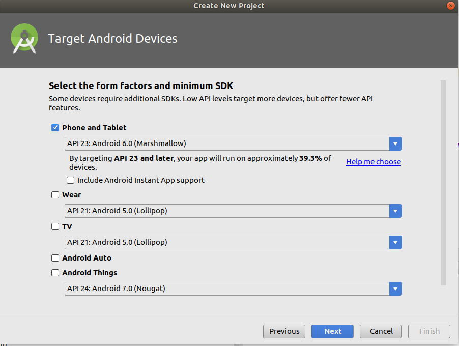
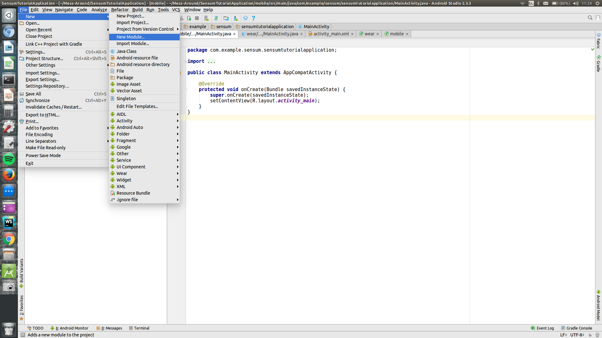

Introduction
Welcome to the Sensum Emotion AI API & SDK.
The SensumAPI and SensumSDK enables you to build services or products which respond to emotional events in real time.
Glossary of Terms
| Term | Description |
|---|---|
| SensumSDK | SensumSDK refers to the Android and iOS SDKs |
| SensumKit | SensumKit is the framework file that allows an application to use the SensumSDK |
| SensumAPI | The SensumAPI is the Restful API that is used either directly or through the SensumSDK |
SensumAPI
Introduction
SensumAPI enables you to access our emotional intelligence platform. Our API is designed to be RESTful, responding to HTTP requests with bodies in JSON format. All requests require that the Content-Type: application/json header be specified.
SensumAPI is also cross-origin resource sharing ready.
SensumSDK handles many of these requests and responses natively. It can however be useful to utilise the SensumAPI directly.
Scroll down for code samples, example requests and responses. Select a language for code samples from the tabs above or the mobile navigation menu.
URI Structure
SensumAPI uses URI resources to provide access to its services. To use a RESTful API, your application will use HTTP Methods(GET, POST, etc.) to request and parse a response. SensumAPI uses JSON for communication between your application and the server.
An example URI: https://api.sensum.co/v0/testdata
Authorization
SensumAPI uses a combination of an API Key and AWS Signature v4 signing to authorize access. You can register a new API Key by contacting us.
SensumAPI expects each call to contain the following headers to gain access:
- Content-Type:
application/json - Authorization:
$AWSv4Signature - X-API-Key:
$YourAPIKey(For trial usage use "PublicDemoKeyForDocumentation")
To calculate the value for the Authorization header you must calculate a hash of your request, add extra information, then add the AWS secret key in order to create a signing key and then use this to sign the request. To learn more about generating the Signature please read the AWS Documentation on Signature v4
When using the SDK, the signature will be automatically generated when making API calls through it.
Available Metrics
Below are the metrics that SensumAPI can analyse and the units that the data is posted in
| Metric Name | Unit |
|---|---|
| heartrate | bpm |
| breathingrate | bpm |
| temperature | oC, assumed to be ambient/external |
| skintemperature | oC |
| gsr | Siemens* |
| location_latitude | deg |
| location_longitude | deg |
| location_altitude | m |
| location_accuracy | or location_accuracy_h/v if available |
| location_speed | m/s |
| acceleration | linear acceleration in m/s2** |
| acceleration_x | m/s2 |
| acceleration_y | m/s2 |
| acceleration_z | m/s2 |
* The GSR Conductance unit “Siemens” is the inverse of the skin resistance; some devices return GSR as resistance in Ohms and this must be converted before upload, i.e. if a device returns values in x kOhms, the conversion is 1/(1000*x)
** All acceleration values should exclude gravity and be in m/s2 i.e. using the userAcceleration iOS method rather than the acceleration method
SensumAPI Analysis Responses
| Input Metric(s) | Generated Events | Generated Records | Generated Stats |
|---|---|---|---|
| any | Events for that Metric | Stats for that event | |
heartrate |
arousal |
arousal (See Fuzzy Class Stats) |
|
gsr |
engagement |
engagement (See Fuzzy Class Stats) |
|
acceleration_[x,y,z] |
activity |
activity (See Fuzzy Class Stats) |
Events
| Event Fields | Type | Meaning |
|---|---|---|
| time | UTC Timestamp (ms) | Time of event |
| value | String: One of [‘normal’, ‘rising’, ‘falling’, ‘max’, ‘min’] | Type of event (normal is not currently used) |
| severity | Float | Relative severity of the event, i.e. how much of value change between forward/backward events with respect to the average value |
Stats
| Stats Field | Type | Meaning |
|---|---|---|
| avg | Float | average (mean) value |
| duration | Float (seconds) | time between first and last analysed records |
| max | Float | max value |
| min | Float | min value |
| std | Float | standard deviation of the record |
| percentiles | Object(dict) | 10th, 50th, and 90th percentile values |
Fuzzy Class Stats
For “fuzzy” classification outputs such as arousal, engagement and activity, an additional stats structure is used containing 3 fields:
| Field | Type | Meaning |
|---|---|---|
| value | Float | [0-1] activation value |
| dominant | string | label of the dominant classification category |
| sectors | Object(dict) | per-category-label activivation (label:value,…) |
Current Sector Labels (highest to lowest activation value):
- Activity : ‘active’, ‘inactive’
- Arousal : ‘excited’, ‘activated’, ‘calm’, ‘passive’, ‘relaxed’
- Engagement: ‘highly engaged’, ‘engaged’, ‘activated’, ‘neutral’
Send text data to analyse emoji and text sentiment
This endpoint allows users to send strings of text to our service for emotional sentiment analysis.
The service will return a JSON object that contain Positivity, Negativity and Emotionality values for emojis and text.
HTTP Request
POST https://api.sensum.co/v0/sentiment
Glossary
| Term | Description |
|---|---|
| Positivity | The level of positive emotion expressed in an input(Scale: 0 to +1) |
| Negativity | The level of negative emotion expressed in an input(Scale: 0 to +1) |
| Emotionality | The overall strength of emotion contained in an input(Scale: -1 to +1)* |
- Values greater than 0 imply positive feelings, values less than 0 imply negative feelings while 0 implies no emotional response.
Code samples
var headers = {
'Content-Type':'application/json',
'Authorization' : 'AWS Sig v4 Key',
'x-api-key' : 'PublicDemoKeyForDocumentation'
};
var data = {
"text":"👌👌👌"
};
$.ajax({
url: 'https://api.sensum.co/v0/sentiment',
method: 'post',
data: JSON.stringify(data);
headers: headers,
success: function(data) {
console.log(JSON.stringify(data));
}
})
const request = require('node-fetch');
const headers = {
'Content-Type':'application/json',
'Authorization' : 'AWS Sig v4 Key',
'x-api-key' : 'PublicDemoKeyForDocumentation'
};
var data = {
"text":"👌👌👌"
};
fetch('https://api.sensum.co/v0/sentiment',
{
method: 'POST',
body : body,
headers: headers
})
.then(function(res) {
return res.json();
}).then(function(body) {
console.log(body);
});
import requests
headers = {
'Content-Type':'application/json',
'Authorization' : 'AWS Sig v4 Key',
'x-api-key' : 'PublicDemoKeyForDocumentation'
}
data = {
"text":"👌👌👌"
}
r = requests.post('https://api.sensum.co/v0/sentiment', data=data, headers = headers)
print r.json()
Responses
| Status | Meaning | Description |
|---|---|---|
| 200 | OK | 200 response |
Examples
Please refer to the code samples for request and response examples
Text Only - Unemotional
Request
{
"text": "This is nothing"
}
Response
{
"emoji_sentiment": null,
"text_sentiment": {
"compound": 0.0, //Aggregate Emotionality Score from -1,+1
"neg": 0.0, // Negativity Score from 0 to +1
"neu": 1.0, // Neutrality Score from 0 to +1
"pos": 0.0 // Positivity Score from 0 to +1
}
}
Text Only - Emotional
Request
{
"text": "This was a very good test"
}
Response
{
"emoji_sentiment": null,
"text_sentiment": {
"positivity": 0.444,
"negativity": 0.0,
"emotionality": 0.4927
}
}
Emoji
Request
{
"text":"👌👌👌"
}
Response
{
"text_sentiment": {
"negativity": 0.0,
"positivity": 0.0,
"emotionality": 0.0
},
"emoji_sentiment": {
"positivity": 0.6575529733,
"negativity": 0.0936431989,
"emotionality": 0.4236068641
}
}
Retrieve previously recorded data
This endpoint allows the user to retrieve previously entered data by providing a start time, an end time and the metrics to be retrieved.
HTTP Request
GET https://api.sensum.co/v0/data/
Code samples
var headers = {
'Content-Type':'application/json',
'Authorization' : 'AWS Sig v4 Key',
'x-api-key' : 'PublicDemoKeyForDocumentation'
};
var params = {
'start' : '2017-08-15',
'end' : '2017-08-25',
'metrics' : ['heartrate','breathingrate']
};
$.ajax({
url: 'https://api.sensum.co/v0/data/',
method: 'get',
data : params,
headers: headers,
success: function(data) {
console.log(JSON.stringify(data));
}
})
const request = require('node-fetch');
const headers = {
'Content-Type':'application/json',
'Authorization' : 'AWS Sig v4 Key',
'x-api-key' : 'PublicDemoKeyForDocumentation'
};
fetch('https://api.sensum.co/v0/data?start=2017-08-15&end=2017-08-25&metrics=['heartrate','breathingrate']',
{
method: 'get',
headers: headers
})
.then(function(res) {
return res.json();
}).then(function(body) {
console.log(body);
});
import requests
headers = {
'Content-Type':'application/json',
'Authorization' : 'AWS Sig v4 Key',
'x-api-key' : 'PublicDemoKeyForDocumentation'
}
params = {
'start' : '2017-08-15',
'end' : '2017-08-25',
'metrics' : ['heartrate','breathingrate']
}
r = requests.get('https://api.sensum.co/v0/data/', params = params, headers = headers)
print r.json()
Parameters
| Parameter | Type | Required | Description |
|---|---|---|---|
| start | string | true | Datetime compatible start time for query |
| end | string | true | End time for query |
| metrics | string | true | List of strings of requested metrics |
Responses
| Status | Meaning | Description |
|---|---|---|
| 200 | OK | Successful request |
Retrieve available records
This endpoint allows the user to retrieve a list of available records based on the supplied query information.
HTTP Request
GET https://api.sensum.co/data/records.json
Code samples
var headers = {
'Content-Type':'application/json',
'Authorization' : 'AWS Sig v4 Key',
'x-api-key' : 'PublicDemoKeyForDocumentation'
};
var params = {
'start' : '2017-08-15',
'end' : '2017-08-25',
'metrics' : ['heartrate','breathingrate']
};
$.ajax({
url: 'https://api.sensum.co/v0/data/records.json',
method: 'get',
data: 'params',
headers: headers,
success: function(data) {
console.log(JSON.stringify(data));
}
})
const request = require('node-fetch');
const headers = {
'Content-Type':'application/json',
'Authorization' : 'AWS Sig v4 Key',
'x-api-key' : 'PublicDemoKeyForDocumentation'
};
fetch('https://api.sensum.co/v0/data/records.json?start=2017-08-15&end=2017-08-25&metrics=['heartrate','breathingrate']',
{
method: 'get',
headers: headers
})
.then(function(res) {
return res.json();
}).then(function(body) {
console.log(body);
});
import requests
headers = {
'Content-Type':'application/json',
'Authorization' : 'AWS Sig v4 Key',
'x-api-key' : 'PublicDemoKeyForDocumentation'
}
params = {
'start' : '2017-08-15',
'end' : '2017-08-25',
'metrics' : ['heartrate','breathingrate']
}
r = requests.get('https://api.sensum.co/v0/data/records.json', params = params, headers = headers)
print r.json()
Parameters
| Parameter | Type | Required | Description |
|---|---|---|---|
| start | string | true | Datetime compatible start time for query |
| end | string | true | End time for query |
| metrics | string | true | List of strings of requested metrics |
Responses
| Status | Meaning | Description |
|---|---|---|
| 200 | OK | Successful request |
Example Response
{
"data": {
"acceleration_x": [
{"time": 1501761816636,"value": 0.00222260966538161},
{"time": 1501761817632, "value": -0.0132070300688734},
{"time": 1501761818631, "value": -0.0390399978164584},
{"time": 1501761819632, "value": -0.0268580912779318},
...
],
"acceleration_y": [...],
},
"metrics":
[
"acceleration_x","acceleration_y", "acceleration_z",
"location_altitude", "location_horizontalaccuracy", "location_latitude",
"location_longitude", "location_speed", "location_verticalaccuracy"]
}
Retrieve available metrics
This endpoint allows the user to retrieve a list of available metrics in the requested records.
HTTP Request
GET https://api.sensum.co/v0/data/metrics.json
Code samples
var headers = {
'Content-Type':'application/json',
'Authorization' : 'AWS Sig v4 Key',
'x-api-key' : 'PublicDemoKeyForDocumentation'
};
var params = {
'start' : '2017-08-15',
'end' : '2017-08-25',
'metrics' : ['heartrate','breathingrate']
};
$.ajax({
url: 'https://api.sensum.co/v0/data/metrics.json',
method: 'get',
data: params,
headers: headers,
success: function(data) {
console.log(JSON.stringify(data));
}
})
const request = require('node-fetch');
const headers = {
'Content-Type':'application/json',
'Authorization' : 'AWS Sig v4 Key',
'x-api-key' : 'PublicDemoKeyForDocumentation'
};
fetch('https://api.sensum.co/v0/data/metrics.json?start=2017-08-15&end=2017-08-25&metrics=['heartrate','breathingrate']',
{
method: 'get',
headers: headers
})
.then(function(res) {
return res.json();
}).then(function(body) {
console.log(body);
});
import requests
headers = {
'Content-Type':'application/json',
'Authorization' : 'AWS Sig v4 Key',
'x-api-key' : 'PublicDemoKeyForDocumentation'
}
params = {
'start' : '2017-08-15',
'end' : '2017-08-25',
'metrics' : ['heartrate','breathingrate']
};
r = requests.get('https://api.sensum.co/v0/data/metrics.json', params= params, headers = headers)
print r.json()
Parameters
| Parameter | Type | Required | Description |
|---|---|---|---|
| start | string | true | Datetime compatible start time for query |
| end | string | true | End time for query |
| metrics | string | true | List of strings of requested metrics |
Responses
| Status | Meaning | Description |
|---|---|---|
| 200 | OK | Successful request |
Example Response
{
"metrics":[
"heartrate",
"breatingrate"
]
}
Retrieve available wide-format records
This endpoint allows the user to retrieve a wide-format array of time series records for the available metrics, filled with null values for unavailable values.
HTTP Request
GET https://api.sensum.co/v0/data/wide.json
Code samples
var headers = {
'Content-Type':'application/json',
'Authorization' : 'AWS Sig v4 Key',
'x-api-key' : 'PublicDemoKeyForDocumentation'
};
var params = {
'start' : '2017-08-15',
'end' : '2017-08-25',
'metrics' : ['heartrate','breathingrate']
};
$.ajax({
url: 'https://api.sensum.co/v0/data/wide.json',
method: 'get',
data: params,
headers: headers,
success: function(data) {
console.log(JSON.stringify(data));
}
})
const request = require('node-fetch');
const headers = {
'Content-Type':'application/json',
'Authorization' : 'AWS Sig v4 Key',
'x-api-key' : 'PublicDemoKeyForDocumentation'
};
fetch('https://api.sensum.co/v0/data/wide.json?start=2017-08-15&end=2017-08-25&metrics=['heartrate','breathingrate']',
{
method: 'get',
headers: headers
})
.then(function(res) {
return res.json();
}).then(function(body) {
console.log(body);
});
import requests
headers = {
'Content-Type':'application/json',
'Authorization' : 'AWS Sig v4 Key',
'x-api-key' : 'PublicDemoKeyForDocumentation'
}
params = {
'start' : '2017-08-15',
'end' : '2017-08-25',
'metrics' : ['heartrate','breathingrate']
};
r = requests.get('https://api.sensum.co/v0/data/wide.json', params = params, headers = headers)
print r.json()
Parameters
| Parameter | Type | Required | Description |
|---|---|---|---|
| start | string | true | Datetime compatible start time for query |
| end | string | true | End time for query |
| metrics | string | true | List of strings of requested metrics |
Responses
| Status | Meaning | Description |
|---|---|---|
| 200 | OK | Successful request |
Send data for events analysis
This endpoint allows the user to send data to the Emotion AI service for analysis. The response will return a series of significant events.
An event is triggered when there is a statistically significant timeseries change detected in an incoming data stream, be that from a Bluetooth sensor or internal sensor such as Accelerometer. Depending on the data stream applied, this can indicate a shift or change in emotional or activity state.
The severity of an event is dependent on
How “steep” the event is and
How “isolated” the event is with respect to any events identified before / after it.
HTTP Request
POST https://api.sensum.co/v0/events
Code samples
var headers = {
'Content-Type':'application/json',
'Authorization': 'AWS_Sig v4 Key',
'x-api-key': 'Public'
};
var data = {
"records": {
"heartrate": [
{
"time": 1502807187332,
"value": 111.77347523527911
},
{
"time": 1502807188332,
"value": 112.89604978090439
},
{
"time": 1502807189332,
"value": 112.37719504311998
},
{
"time": 1502807190332,
"value": 113.68469103590627
},
{
"time": 1502807191332,
"value": 113.67799449012763
},
{
"time": 1502807192332,
"value": 112.71988545819869
},
{
"time": 1502807193332,
"value": 113.05775062793727
},
{
"time": 1502807194332,
"value": 114.53499763344529
},
{
"time": 1502807195332,
"value": 115.4964191594706
},
{
"time": 1502807196332,
"value": 115.31744641217797
}
]
}
};
$.ajax({
url: 'https://api.sensum.co/v0/events',
method: 'post',
data: JSON.stringify(data),
headers: headers,
success: function(data) {
console.log(JSON.stringify(data));
}
})
const request = require('node-fetch');
const inputBody = '{
"records": {
"heartrate": [
{
"time": 1502807187332,
"value": 111.77347523527911
},
{
"time": 1502807188332,
"value": 112.89604978090439
},
{
"time": 1502807189332,
"value": 112.37719504311998
},
{
"time": 1502807190332,
"value": 113.68469103590627
},
{
"time": 1502807191332,
"value": 113.67799449012763
},
{
"time": 1502807192332,
"value": 112.71988545819869
},
{
"time": 1502807193332,
"value": 113.05775062793727
},
{
"time": 1502807194332,
"value": 114.53499763344529
},
{
"time": 1502807195332,
"value": 115.4964191594706
},
{
"time": 1502807196332,
"value": 115.31744641217797
}
]
}
}
';
const headers = {
'Content-Type':'application/json',
'Authorization' : 'AWS Sig v4 Key',
'x-api-key' : 'PublicDemoKeyForDocumentation'
};
fetch('https://api.sensum.co/v0/events',
{
method: 'POST',
body: inputBody,
headers: headers
})
.then(function(res) {
return res.json();
}).then(function(body) {
console.log(body);
});
import requests
headers = {
'Content-Type':'application/json',,
'Authorization' : 'AWS Sig v4 Key',
'x-api-key' : 'PublicDemoKeyForDocumentation'
}
data = {
"records": {
"heartrate": [
{
"time": 1502807187332,
"value": 111.77347523527911
},
{
"time": 1502807188332,
"value": 112.89604978090439
},
{
"time": 1502807189332,
"value": 112.37719504311998
},
{
"time": 1502807190332,
"value": 113.68469103590627
},
{
"time": 1502807191332,
"value": 113.67799449012763
},
{
"time": 1502807192332,
"value": 112.71988545819869
},
{
"time": 1502807193332,
"value": 113.05775062793727
},
{
"time": 1502807194332,
"value": 114.53499763344529
},
{
"time": 1502807195332,
"value": 115.4964191594706
},
{
"time": 1502807196332,
"value": 115.31744641217797
}
]
}
}
r = requests.post('https://api.sensum.co/v0/events', params = data, headers = headers)
print r.json()
Body parameter
{
"records": {
"heartrate": [
{
"time": 1502807187332,
"value": 111.77347523527911
},
{
"time": 1502807188332,
"value": 112.89604978090439
},
{
"time": 1502807189332,
"value": 112.37719504311998
},
{
"time": 1502807190332,
"value": 113.68469103590627
},
{
"time": 1502807191332,
"value": 113.67799449012763
},
{
"time": 1502807192332,
"value": 112.71988545819869
},
{
"time": 1502807193332,
"value": 113.05775062793727
},
{
"time": 1502807194332,
"value": 114.53499763344529
},
{
"time": 1502807195332,
"value": 115.4964191594706
},
{
"time": 1502807196332,
"value": 115.31744641217797
}
]
}
}
Responses
| Status | Meaning | Description |
|---|---|---|
| 200 | OK | Successful request |
Response Headers
| Status | Header | Type | Format | Description |
|---|---|---|---|---|
| 200 | Access-Control-Allow-Origin | string |
Example responses
{
"events":{
"heartrate":[
{"time":1502807187000,"value":"min","severity":0.03176537181134584},
{"time":1502807196000,"value":"max","severity":0.03176537181134584}
]
},
"stats":{
"heartrate":{
"avg":113.55359048765672,
"duration":9,
"max":115.4964191594706,
"min":111.77347523527911,
"std":1.175057115344551,
"percentiles":{"10":112.3168230623359,"50":113.36787255903245,"90":115.33534368690724}}
},
"records":{
"arousal":[
{"time":1502807187332,"value":5.359549491038813e-15},
{"time":1502807188332,"value":0.052921639437207874},
{"time":1502807189332,"value":0.028461220785887004},
{"time":1502807190332,"value":0.09010062973692541},
{"time":1502807191332,"value":0.08978493383721622},
{"time":1502807192332,"value":0.044616707881203976},
{"time":1502807193332,"value":0.06054471797280525},
{"time":1502807194332,"value":0.13018671519236316},
{"time":1502807195332,"value":0.17551110237516387},
{"time":1502807196332,"value":0.16707377298958567}
]
},
"exec_time":0.12196207046508789
}
Get test data
This endpoint allows the user to generate a series of test data streams that can be fed into the events endpoint to test the analysis service. When testing the events endpoint only POST the “records” JSON object in the request body.
HTTP Request
GET https://api.sensum.co/v0/testdata
Code samples
var headers = {
'Content-Type':'application/json',
'Authorization' : 'AWS Sig v4 Key',
'x-api-key' : 'PublicDemoKeyForDocumentation'
};
var params = {
'n' : '10',
'freq' : '1',
'values' : ['heartrate']
};
$.ajax({
url: 'https://api.sensum.co/v0/testdata',
method: 'get',
data : params,
headers: headers,
success: function(data) {
console.log(JSON.stringify(data));
}
})
const request = require('node-fetch');
const headers = {
'Content-Type':'application/json',
'Authorization' : 'AWS Sig v4 Key',
'x-api-key' : 'PublicDemoKeyForDocumentation'
};
var params = {
'n' : '10',
'freq' : '1',
'values' : ['heartrate']
};
fetch('https://api.sensum.co/v0/testdata?n=10&freq=1&values=['heartrate']',
{
method: 'GET',
data: params,
headers: headers
})
.then(function(res) {
return res.json();
}).then(function(body) {
console.log(body);
});
import requests
headers = {
'Content-Type':'application/json',
'Authorization' : 'AWS Sig v4 Key',
'x-api-key' : 'PublicDemoKeyForDocumentation'
}
params = {
'n' : '10',
'freq' : '1',
'values' : ['heartrate']
}
r = requests.get('https://api.sensum.co/v0/testdata', params = params, headers = headers)
print r.json()
Parameters
| Parameter | Default | Type | Required | Description |
|---|---|---|---|---|
| values | [heartrate] | string | false | An array of the metrics to be generated |
| freq | 1 | string | false | Frequency of generated records in seconds. Determines timestamps |
| n | 100 | string | false | Number of records to be generated per metric |
Responses
| Status | Meaning | Description |
|---|---|---|
| 200 | OK | Successful request |
Response Headers
| Status | Header | Type | Format | Description |
|---|---|---|---|---|
| 200 | Access-Control-Allow-Origin | string |
Example responses
{
"data":{
"records":{
"heartrate":[
{"time":1502807389973,"value":150.97562499389198},
{"time":1502807390973,"value":152.35592250838624},
{"time":1502807391973,"value":152.7272449519015},
{"time":1502807392973,"value":153.35354662656178},
{"time":1502807393973,"value":153.78404886070086},
{"time":1502807394973,"value":155.3441181915241},
{"time":1502807395973,"value":155.18001608899218},
{"time":1502807396973,"value":154.5414565968463},
{"time":1502807397973,"value":156.35855725243886},
{"time":1502807398973,"value":156.83569789892923}
]
}
},
"params":{"n":10,"values":["heartrate"],"freq":1}
}
Errors
SensumAPI uses the following error codes:
| Error Code | Meaning |
|---|---|
| 400 | Bad Request - Your Request may have caused an error |
| 401 | Unauthorized - This error will likely occur if the Cognito Authorization Header (AWS Signature v4) is either missing or invalid. |
| 403 | Forbidden -This error will likely occur if the API Key Header is either invalid or missing. |
| 405 | Method Not Allowed - You have attempted to make a request using a HTTP Method that is invalid for the requested resource. |
| 429 | Too Many Requests - You have made more requests than is allowed under the usage plan. |
| 500 | Internal Server Error - There is an error with our service |
| 503 | Service Unavailable - Our service is down for maintenance. Please try again later. |
SensumSDK - Android
Android Device Compatibility
The Android version of SensumSDK can be installed on devices with 5.1.1 (Lollipop) up to 7.0 (Nougat).
We recommend the Samsung S6, S7, S8, OnePlus X and above or the Google Pixel as suitable devices
Bluetooth Device Compatibility
- The Android SensumSDK supports connecting to BLE devices for reading heart rate measurements. For a list of tested compatible devices please view the list of compatible devices at our Knowledge Centre.
Note: This document is regularly updated with new devices. Please contact us for integration details. GSR data is only accessible from Shimmer devices at present.
Accepted Biometric Data Inputs
The Android SensumSDK can accept the following metrics:
- Heart Rate
- GSR
- GPS latitude
- GPS longitude
- GPS altitude
- GPS accuracy
- GPS speed
- acceleration
- acceleration X
- acceleration Y
- acceleration Z
Service Constants
These constants can used to construct message bundled that are then relayed to the Emotion AI service to send and retrieve data.
One example of a call to the service would be to send credentials in order to authorize a user. See “Submit Credentials to service for authorization” for an example in how these bundles are constructed.
Enable Scan
public static final String ENABLE_SCAN = "enable-scan"
This passes a message of enabling scan for the devices to the SensumSDK service
Device List
public static final String DEVICE_LIST = "device-list"
This is used to get a list of scanned devices
Request
public static final String REQUEST = "send-request"
This is used to get request data
Request Filter
public static final String REQUEST_FILTER = "request-filter"
This is used to pass a message from the SensumSDK service which is used as an intent filter at the front end for the request which is made to the SensumSDK service
Device filter
public static final String DEVICE_FILTER = "device-filter"
This is used to pass a message from the SensumSDK service which is used as an intent filter at the front end for the connected device
Value Filter
public static final String VALUE_FILTER = "value-filter"
This is used to pass a message from the SensumSDK service which is used as an intent filter at the front end for receiving the heart rate value
Login Filter
public static final String LOGIN_FILTER = "login-filter"
This is used to pass a message from the SensumSDK service which is used as an intent filter at the front end for the user login
GPS Filter
public static final String GPS_FILTER = "gps-filter"
This is used to pass a message from the SensumSDK service which is used as an intent filter at the front end for receiving the GPS values
Accelerometer Filter
public static final String ACC_FILTER = "acc-filter"
This is used to pass a message from the SensumSDK service which is used as an intent filter at the front end for receiving the accelerometer values
Extra Data
public static final String EXTRA_DATA = "extra-data"
This is used to bundle up extra data to the intents
Device Name
public static final String DEVICE_NAME = "device-name"
This is used to get the connected device name
Device Address
public static final String DEVICE_ADDRESS = "device-address"
This is used to get the connected device address
User Name
public static final String USER_NAME = "user-name"
This is used to pass the username for authentication to the SensumSDK service, only authenticated users are able to use the SensumSDK service
Password
public static final String PASSWORD = "password"
This is used to pass the password for authentication to the SensumSDK service
Wear HR Value
public static final String WEAR_HR_VALUE = "wear-hr-value"
This is used to pass the Heart Rate value captured using Android Wear to the SensumSDK service
Text Message
public static final String TEXT_MESSAGE = "text-message"
This is used to pass Text/Emoji value to the SensumSDK service
X Value
public static final String X_VALUE = "x-value"
This is used to pass the captured accelerometer x value
Y Value
public static final String Y_VALUE = "y-value"
This is used to pass the captured accelerometer y value
Z Value
public static final String Z_VALUE = "z-value"
This is used to pass the captured accelerometer z value
Speed Value
public static final String SPEED_VALUE = "speed-value"
This is used to pass the captured GPS speed value
Latitude Value
public static final String LATITUDE_VALUE = "latitude-value"
This is used to pass the captured GPS latitude value
Longitude Value
public static final String LONGITUDE_VALUE = "longtitude-value"
This is used to pass the captured GPS longitude value
Altitude Value
public static final String ALTITUDE_VALUE = "altitude-value"
This is used to pass the captured GPS altitude value
Bearing Value
public static final String BEARING_VALUE = "bearing-value"
This is used to pass the captured GPS bearing value
Accuracy Value
public static final String ACCURACY_VALUE = "accuracy-value"
This is used to pass the captured GPS accuracy value
Acceleration Capture
public static final String ACCELERATION_CAPTURE = "acceleration-capture"
This is used to enable/disable capturing of accelerometer data which is sent to the API
GPS Capture
public static final String GPS_CAPTURE = "gps-capture"
This is used to enable/disable capturing of GPS data which is sent to the API
HR Capture
public static final String HR_CAPTURE = "heartrate-capture"
This is used to enable/disable capturing of heart rate data which is sent to the API
Input Capture
public static final String INPUT_CAPTURE = "input-capture"
This is used to enable/disable capturing of text/emoji data which is sent to the API
HR Data Rate
public static final String HEARTRATE_DATA_RATE = "heartrate_data_rate"
This is used to pass the interval rate (in milliseconds) for the heart rate data to be sent to the API
Accelerometer Data Rate
public static final String ACCELEROMETER_DATA_RATE = "accelerometer_data_rate"
This is used to pass the interval rate (in milliseconds) for the accelerometer data to be sent to the API
GPS Data Rate
public static final String GPS_DATA_RATE = "gps_data_rate"
This is used to pass the interval rate (in milliseconds) for the GPS data to be sent to the API
Input Tags Data Rate
public static final String INPUT_TAGS_DATA_RATE = "input_tags_data_rate"
This is used to pass the interval rate (in milliseconds) for the text/emoji data to be sent to the API
Device Disconnected
public static final String DEVICE_DISCONNECTED = "com.example.bluetooth.le.ACTION_GATT_DISCONNECTED"
This is used to pass a message from the SensumSDK service in case of any device disconnection
API Response
public static final String API_RESPONSE = "api-response"
This is used to pass message from the SensumSDK service for the API response
Toast Message
public static final String TOAST_MESSAGE = "toast-message"
This is used to pass informative toast message from the SensumSDK service
API Base URL
public static final String API_BASEURL = "api-baseurl"
This is used to pass the base url for API to the SensumSDK service which is used for setting up communication with the API
Auth Token
public static final String AUTH_TOKEN = "auth-token"
This is used to pass the authentication token for API to the SensumSDK service which is used for setting up communication with the API
User Pool Id
public static final String USER_POOL_ID = "user-poolid"
This is used to pass the user pool id to the SensumSDK service which is used for user authentication
Client Id
public static final String CLIENT_ID = "client-id"
This is used to pass the client id to the SensumSDK service which is used for user authentication
Connect
public static final int CONNECT = 101
This is used to connect to the selected device from the list of the devices
Bind Service
public static final int BIND_SERVICE = 103
This is used for binding to the service
Unbind Service
public static final int UNBIND_SERVICE = 104
This is used for unbinding from the service
Scan
public static final int SCAN = 105
This is used internally in the SensumSDK service to filter scan for devices
Devices
public static final int DEVICES = 106
This is used to filter for devices
Send
public static final int SEND = 108
This is used to filter send from the front end
Connecting
public static final int CONNECTING = 109
This is used to filter connecting from the front end
Start Service
public static final int START_SERVICE = 111
This is used to start the service
Cancel Capture
public static final int CANCEL_CAPTURE = 112
This is used to cancel sending of the captured data to the API
Start Capture
public static final int START_CAPTURE = 113
This is used to start sending of the captured data to the API
Enable Storing
public static final int ENABLE_STORING = 114
This is used to enable storing of the captured data locally on the device
Disable Storing
public static final int DISABLE_STORING = 115
This is used to disable storing of the captured data locally on the device
Enable HR Timer
public static final int ENABLE_HRTIMER = 116
This is used to enable the timer for sending the heart rate data to the API
Disable HR Timer
public static final int DISABLE_HRTIMER = 117
This is used to disable the timer for sending the heart rate data to the API
Enable Accelerometer Timer
public static final int ENABLE_ACCTIMER = 118
This is used to enable the timer for sending the accelerometer data to the API
Disable Accelerometer Timer
public static final int DISABLE_ACCTIMER = 119
This is used to disable the timer for sending the accelerometer data to the API
Enable GPS Timer
public static final int ENABLE_GPSTIMER = 120
This is used to enable the timer for sending the GPS data to the API
Disable GPS Timer
public static final int DISABLE_GPSTIMER = 121
This is used to disable the timer for sending the GPS data to the API
Enable Input Timer
public static final int ENABLE_INPUTTIMER = 122
This is used to enable the timer for sending the text/emoji data to the API
Disable Input Timer
public static final int DISABLE_INPUTTIMER = 123
This is used to enable the timer for sending the text/emoji data to the API
Login
public static final int LOGIN = 124
This is used to pass a login message to the SensumSDK service.
Input Text
public static final int INPUT_TEXT = 125
This is used to filter/pass text & emoji message to the SensumSDK service.
Example Methods
Initiate connection to service
private final ServiceConnection mConnection = new ServiceConnection()
Connection made to the service. Once bound to the service, the binder object is passed through to messenger to set it up
private final ServiceConnection mConnection = new ServiceConnection() {
@Override
public void onServiceConnected(ComponentName name, IBinder binder) {
mIsBound = true;
mServiceMessenger = new Messenger(binder);
}
@Override
public void onServiceDisconnected(ComponentName name) {
}
};
Submit Credentials to service for authorization (Cognito User Pools)
void submit()
Sets up the credential bundle to be sent to the SensumSDK service this needs to be sent first to the SensumSDK service as only authenticated users can use the service
void submit() {
Bundle bundle = new Bundle();
bundle.putString(USER_NAME, "username");
bundle.putString(PASSWORD, "password");
bundle.putString(USER_POOL_ID, "userPoolId");
bundle.putString(CLIENT_ID, "clientId");
bundle.putString(API_BASEURL, "apiBaseUrl");
bundle.putString(AUTH_TOKEN, "authToken");
sendToService(bundle, LOGIN);
}
Submit Credentials to service for authorization (Google Sign-In)
Follow Google’s instructions to add Google Sign-In to your application.
Once successfully implemented you must send the Google Id token for the Google Sign-In application to us
void submit()
Sets up the credential bundle to be sent to the SensumSDK service this needs to be sent first to the SensumSDK service as only authenticated users can use the service
void submit() {
Bundle bundle = new Bundle();
bundle.putString(API_BASEURL, apiBaseUrl);
bundle.putString(API_KEY, apiKey);
bundle.putString(IDENTITY_POOL_ID, identityPoolId);
bundle.putString(GOOGLE_ID_TOKEN, googleIdToken);
bundle.putString(GOOGLE_WEB_CLIENT_ID, googleWebClientId);
sendToService(bundle, GOOGLE_LOGIN);
Send a data message to the service
public void sendToService(Bundle bundle, int argValue)
Send message to the service
- Parameters:
bundle— any data that needs passed to the serviceargValue— for service handler to switch on
public void sendToService(Bundle bundle, int argValue) {
Message message = Message.obtain();
message.arg1 = argValue;
message.setData(bundle);
try {
mServiceMessenger.send(message);
Toast.makeText(this, "Requested the service", Toast.LENGTH_SHORT).show();
} catch (RemoteException e) {
e.printStackTrace();
}
}
Create New Broadcast Receiver Object
private BroadcastReceiver mMessageReceiver = new BroadcastReceiver()
Broadcast receiver with the list of registered filters
private BroadcastReceiver mMessageReceiver = new BroadcastReceiver() {
@Override
public void onReceive(Context context, Intent intent) {
String action = intent.getAction();
switch (action) {
case DEVICE_FILTER:
ArrayList<BluetoothDevice devices = intent.getParcelableArrayListExtra(EXTRA_DATA);
break;
case VALUE_FILTER:
String message = intent.getStringExtra(EXTRA_DATA);
Log.d(TAG, "onReceive: " + message);
break;
case GPS_FILTER:
Bundle gpsBundle = intent.getBundleExtra(EXTRA_DATA);
break;
case ACC_FILTER:
Bundle accBundle = intent.getBundleExtra(EXTRA_DATA);
break;
case DEVICE_DISCONNECTED:
Log.d(TAG, "Device disconnected, please re-connect");
break;
case API_RESPONSE:
String apiResponse = intent.getStringExtra(EXTRA_DATA);
Log.d(TAG, apiResponse);
break;
case TOAST_MESSAGE:
String toastMessage = intent.getStringExtra(EXTRA_DATA);
break;
case WEAR_HR_VALUE:
String wearMessage = intent.getStringExtra(EXTRA_DATA);
break;
}
}
};
Update IntentFilter with new Actions
private IntentFilter updateIntentFilter()
- Returns: an intent filter with a list of actions
private IntentFilter updateIntentFilter() {
final IntentFilter intentFilter = new IntentFilter();
intentFilter.addAction(REQUEST_FILTER);
intentFilter.addAction(DEVICE_FILTER);
intentFilter.addAction(VALUE_FILTER);
intentFilter.addAction(GPS_FILTER);
intentFilter.addAction(ACC_FILTER);
intentFilter.addAction(DEVICE_DISCONNECTED);
intentFilter.addAction(API_RESPONSE);
intentFilter.addAction(TOAST_MESSAGE);
intentFilter.addAction(WEAR_HR_VALUE);
return intentFilter;
}
Start Biometric Data Capture
private void startCaptureSetUp()
Starts capturing of biometric/contextual data
private void startCaptureSetUp() {
Toast.makeText(this, "Started capturing", Toast.LENGTH_SHORT).show();
Log.d(TAG, "Started capturing");
sendToService(getCaptureBundle(), START_CAPTURE);
}
Get Capture Bundle
private Bundle getCaptureBundle()
Sets up the bundle data for capture using the service constants
- Returns: capture bundle
private Bundle getCaptureBundle() {
Bundle bundle = new Bundle();
bundle.putBoolean(ACCELERATION_CAPTURE, adapter.accelerationView.getSwitchValue());
bundle.putBoolean(HR_CAPTURE, true);
bundle.putBoolean(GPS_CAPTURE, true);
bundle.putBoolean(INPUT_CAPTURE, true);
bundle.putLong(HEARTRATE_DATA_RATE, 20000);
bundle.putLong(ACCELEROMETER_DATA_RATE, 30000);
bundle.putLong(GPS_DATA_RATE, 20000);
bundle.putLong(INPUT_TAGS_DATA_RATE, 20000);
return bundle;
}
Stop Biometric Data Capture
private void stopCaptureSetUp()
Stops capturing of biometric/contextual data
private void stopCaptureSetUp() {
Toast.makeText(this, "Stopped capturing", Toast.LENGTH_SHORT).show();
sendToService(getCaptureBundle(), ServiceConstants.CANCEL_CAPTURE);
}
SensumSDK - iOS
iOS Device Compatibility
The iOS version of the SensumSDK can be installed on devices with v10.3.3 and up.
We recommend the iPhone 5 and up as devices to use with the SensumSDK.
Bluetooth Device Compatibility
- The iOS SensumSDK supports connecting to BLE devices for reading heart rate measurements. For a list of tested compatible devices please view the list of compatible devices at our Knowledge Centre.
Note: This document is regularly updated with new devices. Please contact us for integration details.
Accepted Biometric Data Inputs
The iOS SensumSDK can accept the following metrics:
- Heart Rate
- GPS latitude
- GPS longitude
- GPS altitude
- GPS accuracy
- GPS speed
- acceleration
- acceleration X
- acceleration Y
- acceleration Z
SDK Module Command Protocol
Every SensumSDK module conforms to the module command protocol. At present these can be switched on and off independently. Every SensumSDK-managed object has three states that can be toggled independently:
- Updating: You will get live data updates from the respective managed object. If you have defined a listener for that object, its update methods will be called by the SDK and you can reflect these and carry out actions in your app.
- Recording: Data updates will be stored only. If you do not enable updates no data can be recorded as updates will not be read.
- Sending To API: Data updates will be recorded and sent to the SensumAPI.
Protocol Code - SensumSDK written in Swift 3
import foundation
public protocol SDKModuleCommandProtocol {
func startUpdating()
func stopUpdating()
func startRecording()
func stopRecording()
func startSendingToAPI()
func stopSendingToAPI()
func isUpdating() -> Bool
func isRecording() -> Bool
func isSendingToAPI() -> Bool
}
Starting the SensumSDK
To start the SensumSDK you will need:
- An API Key,
- A host URL,
- A stage URL.
We will provide you with the API Key as a string, all you have to do is pass this string into the
SensumSDKManager.
By default, the host URL and stage URL should be “api.sensum.co” and “v0” respectively, unless we have instructed you otherwise.
The SensumSDKManager is the root object in the SensumKit which starts the service.
The manager prepares all objects you can use to interface with your device motion, location and bluetooth peripheral frameworks.
As well as all the data required to send data to the SensumAPI.
In order to create a single instance of the SensumSDKManager, follow the example within the Code Snippet below (the example makes use of a TabBarController to do this, but this could be achieved within any file).
Code Snippet
import UIKit
import SensumKit
class TabBarController: UITabBarController {
var sensumSDK : SensumSDKManager?
override func viewDidLoad() {
super.viewDidLoad()
// Do any additional setup after loading the view, typically from a nib.
sensumSDK = SensumSDKManager(
requestEngineInternalInSeconds: 30,
apiKey: "PublicDemoKeyForDocumentation",
host: "api.sensum.co",
stage: "v0")
startEverythingUpdating()
}
func startEverythingUpdating() {
sensumSDK?.accelerometer.startUpdating()
sensumSDK?.location.startUpdating()
sensumSDK?.bluetooth.startUpdating()
sensumSDK?.tag.startUpdating()
}
}
This single instance of the SensumSDKManager can then be referenced from elsewhere within your application.
Authentication
To get started working with the SensumSDKManager you’re going to need a valid Authentication session. Create an instance of this object and give it valid sign-in details. When using third-party login providers you must provide us with an Audience ID. In the case of Google Sign-In, you must provide use with the Google Applications Client ID. You can find this id contained inside the plist configuration file generated when you set up the login application. For more details please read Google’s documentation here.
Authentication Command
Federated sign-in
In order to authenticate you must sign in using Google Sign-in. Once this has been implemented, use this function to sign in to access the SensumAPI.
sdkManager?authentication.federatedSignIn(provider: provider, authenticationToken: authenticationToken)
Parameters
| Name | Description |
|---|---|
| provider | The URL of the identity provider that you are using this will be ‘accounts.google.com’ in the case of Google Sign-In |
| authenticationToken | This is the authentication token generated by successful login with the identity provider |
API Command
All available commands for configuring and enabling API communication.
Initialisation
var apiCommand = APICommand()
Set Server Request Rate
apiCommand.setServerRequestRate(requestRateInSeconds)
Set the frequency of data uploads to the SensumAPI.
Parameters
| Name | Description |
|---|---|
| requestRateInSeconds | Frequency of server updates in seconds |
Get Server Request Rate
apiCommand.getServerRequestRate()
Returns how often requests are sent to the SensumAPI.
Assign Listener
apiCommand.assignListener(listener)
Assign a listener to listen for SensumAPI events.
Parameters
| Name | Type | Description |
|---|---|---|
| listener | APIResponseListener | An instance of a class that conforms to the APIResponseListener extension |
Accelerometer Command
All available commands for the SensumSDK accelerometer component.
Start Updating
sdkManager?.accelerometer.startUpdating()
Start the updates from CoreMotion.
Stop Updating
sdkManager?accelerometer.stopUpdating()
Stop the updates from CoreMotion.
Start Recording
sdkManager?accelerometer.startRecording()
Start recording the updates from CoreMotion.
Stop Recording
sdkManager?accelerometer.stopRecording()
Stop recording the updates from CoreMotion.
Start Sending to API
sdkManager?accelerometer.startSendingToAPI()
Start sending the updates of CoreMotion to the SensumAPI.
Stop Sending to API
sdkManager?accelerometer.stopSendingToAPI()
Stop sending the updates of CoreMotion to the SensumAPI.
Check Module Update Status
sdkManager?accelerometer.isUpdating()
Check if CoreMotion Accelerometer is updating. Returns a boolean value.
Check Module Recording Status
sdkManager?accelerometer.isRecording()
Check if CoreMotion Accelerometer is recording. Returns a boolean value.
Check SensumAPI Update Status
sdkManager?accelerometer.isSendingToAPI()
Check if CoreMotion Accelerometer is sending to the SensumAPI.
Assign Listener
sdkManager?accelerometer.assignListener(listener)
Assign a listener to the accelerometer module to receive CoreMotion event updates.
Parameters
| Parameter | Type | Description |
|---|---|---|
| listener | AccelerometerListener | An instance of a class that conforms to the AccelerometerListener extension |
Set Read Frequency
sdkManager?accelerometer.setReadFrequency(newIntervalInSeconds)
Set the frequency of the updates from the accelerometer.
Parameters
| Parameter | Type | Description |
|---|---|---|
| newIntervalInSeconds | Double | Set the interval time in seconds, (minimum interval is 0.01s) |
Bluetooth Command
Below are all available commands relating to Bluetooth within the SensumSDK.
- SensumKit supports connecting to BLE devices for reading heart rate measurements. For a list of tested compatible devices please view the list of compatible devices at our Knowledge Centre.
Note: This document is regularly updated with new devices. Please contact us for integration details. GSR data is only accessible from Shimmer devices at present.
Start Updating
sdkManager?bluetooth.startUpdating()
Start the updates of any connected heart rate peripheral.
Stop Updating
sdkManager?bluetooth.stopUpdating()
Stop the updates of any connected heart rate peripheral.
Start Recording
sdkManager?bluetooth.startRecording()
Start recording the updates of any connected heart rate peripheral.
Stop Recording
sdkManager?bluetooth.stopRecording()
Stop recording the updates of any connected heart rate peripheral.
Start Sending to SensumAPI
sdkManager?bluetooth.startSendingToAPI()
Start sending the updates of any connected heart rate peripheral to the SensumAPI.
Stop Sending to SensumAPI
sdkManager?bluetooth.stopSendingToAPI()
Stop sending the updates of any connected heart rate peripheral to the SensumAPI.
Check Module Update Status
sdkManager?bluetooth.isUpdating()
Check if module is updating. Returns a boolean value.
Check Module Recording Status
sdkManager?bluetooth.isRecording()
Check if module is recording. Returns a boolean value.
Check SensumAPI Update Status
sdkManager?bluetooth.isSendingToAPI()
Check if module is sending to the SensumAPI.
Assign Listener
sdkManager?bluetooth.assignListener(listener)
Assign a listener to the bluetooth module to receive bluetooth event updates.
Parameters
| Parameter | Type | Description |
|---|---|---|
| listener | BluetoothListener | An instance of a class that conforms to the BluetoothListener extension |
Start Scan for Devices
sdkManager?bluetooth.startScanForDevices()
Start scanning for discoverable peripheral devices.
Connect to peripheral device
sdkManager?bluetooth.connectTo(peripheralDevice)
Connect to a discovered peripheral device. Discovered devices can be acquired from the listOfDevices returned by the getDeviceList() function.
Parameters
| Parameter | Type | Description |
|---|---|---|
| peripheralDevice | CBPeripheral | The bluetooth peripheral device you want to connect to |
Clear List of Discovered Devices
sdkManager?bluetooth.clearDeviceList()
Clear the list of devices discovered (equivalent to a refresh).
Disconnect from Device
sdkManager?bluetooth.disconnect()
Disconnect from the currently connected peripheral device.
Get Device List
sdkManager?bluetooth.getDeviceList()
Return a list of all discovered peripherals. The list will begin populating after startScanForDevices() is called.
Returns a list of dictionaries containing bluetooth peripheral information with three fields:
| Field Name | Type | Description |
|---|---|---|
| deviceName | String | returns a String of the device name |
| peripheral | CoreBluetooth CBPeripheral | returns the CoreBluetooth CBPeripheral object (import CoreBluetooth to use this) |
| type | String | For now all peripherals are of type BLE |
Example Usage
if let peripheralDictionary = sdkManager?.bluetooth.getDeviceList()[index]?["peripheral"] {
let peripheralToAdd = peripheralDictionary as! CBPeripheral
}
Location Command
All available commands for the SensumSDK location component.
Start Updating
sdkManager?location.startUpdating()
Start the updates from CoreLocation.
Stop Updating
sdkManager?location.stopUpdating()
Stop the updates from CoreLocation.
Start Recording
sdkManager?location.startRecording()
Start recording the updates from CoreLocation.
Stop Recording
sdkManager?location.stopRecording()
Stop recording the updates from CoreLocation.
Start Sending to API
sdkManager?location.startSendingToAPI()
Start sending the updates of CoreLocation to the SensumAPI.
Stop Sending to API
sdkManager?location.stopSendingToAPI()
Stop sending the updates of CoreLocation to the SensumAPI.
Check Module Update Status
sdkManager?location.isUpdating()
Check if the location module is updating. Returns a boolean value.
Check Module Recording Status
sdkManager?location.isRecording()
Check if the location module is recording. Returns a boolean value.
Check SensumAPI Update Status
sdkManager?location.isSendingToAPI()
Check if the location module is sending to the SensumAPI.
Assign Listener
sdkManager?location.assignListener()
Assign a listener to the location module to receive CoreLocation event updates.
Parameters
| Parameter | Type | Description |
|---|---|---|
| listener | LocationListener | An instance of a class that conforms to the LocationListener extension |
Tag Command
All available commands for our tagging module. This is useful for noting events that occur in data. e.g. “Started workout set”, “Jumped out of a plane”, “Finished jogging”. These events are automatically timestamped.
Start Updating
sdkManager?tag.startUpdating()
Start the updates from the tag system which notifies listeners of new tags.
Stop Updating
sdkManager?tag.stopUpdating()
Stop the updates from the tag system.
Start Recording
sdkManager?tag.startRecording()
Start recording tags created.
Stop Recording
sdkManager?tag.stopRecording()
Stop recording tags created.
Start Sending to SensumAPI
sdkManager?tag.startSendingToAPI()
Start sending tags to the SensumAPI.
Stop Sending to SensumAPI
sdkManager?tag.stopSendingToAPI()
Stop sending tags to the SensumAPI.
Check Module Update Status
sdkManager?tag.isUpdating()
Check if the tag module is updating. Returns a boolean value.
Check Module Recording Status
sdkManager?tag.isRecording()
Check if the tag module is recording. Returns a boolean value.
Check SensumAPI Update Status
sdkManager?tag.isSendingToAPI()
Check if the tag module is sending to the SensumAPI.
Assign Listener
sdkManager?tag.assignListener(listener)
Assign a listener to the tag module to receive tag event updates.
Parameters
| Parameter | Type | Description |
|---|---|---|
| listener | TagListener | An instance of a class that conforms to the TagListener extension |
Create Tag
sdkManager?tag.createTag(tag)
Creates a tag object composed of a string and timestamp pair.
Parameters
| Parameter | Type | Description |
|---|---|---|
| tag | String | A string object of a message or emoticon |
APIListener
To be able to listen for updates from the API you must extend your class using an extension of type API Listener using the following example code.
APIListener extension
extension RecordingMasterViewController: APIListener {
func realmResponseSaved() {
// saved to Realm, lets query it and print the values
if let realmResponse = try? Realm().objects(Response.self).last {
print(realmResponse)
}
}
func sentimentResponseSaved() {
if let realmSentiment = try? Realm().objects(SentimentResponse.self).last {
print(realmSentiment)
}
}
func arousalReceived(arousalScore: Double) {
print("arousalScore \(arousalScore)")
}
func apiRequestFailure(message: String, statusCode: Int?) {
print("Failed to send to SensumAPI \(message) \(statusCode)")
}
func apiRequestSuccessful() {
print("successfully saved")
}
}
API Listener Functions: API Request Successful
func apiRequestSuccessful()
Used to notify listeners that a request made to the SensumAPI was successful. Called immediately after a 200 HTTP response is received but not before the data received has been safely saved to Realm instance of SensumKit.
API Listener Functions: API Request Failure
func apiRequestFailure(message: String, statusCode: Int?)
Used to notify listeners that a request made to the SensumAPI was unsuccessful. Called immediately after a HTTP response that was not 200.
Parameters
| Parameter | Type | Description |
|---|---|---|
| message | String | The error message from the HTTP request |
| statusCode | Int? | Optional URLResponse HTTP status code from the HTTP request |
API Listener Functions: Realm Response Saved
func realmResponseSaved()
Used to notify listeners that a successful request body has been parsed and is ready for querying in Realm.
Called immediately after response.save() is called.
API Listener Functions: Arousal Received
func arousalReceived(arousalScore: Double)
Used to notify listeners that a successful request body has been parsed and an arousal score value is sent to listeners.
Parameters
| Parameter | Type | Description |
|---|---|---|
| arousalScore | Double | Double value of the calculated arousal from the SensumAPI |
API Listener Functions: Sentiment Response Received
func sentimentResponseReceived()
Used to notify listeners that a successful request body for a text/emoji object has been parsed and is ready for querying in Realm.
Called immediately after sentimentEmotion.save() is called.
AccelerometerListener
Accelerometer listeners handle updates from the SensumSDK accelerometer component. Subscribers will be notified of updates to the Accelerometer object. To use this listener extend your class using the following example code:
AccelerometerListener extension
extension AccelerometerViewController: AccelerometerListener {
func accelerationUpdated(newAcceleration: CMAcceleration, dateTime: Date) {
DispatchQueue.main.async {
print(newAcceleration)
}
}
}
AccelerometerListener Functions: Acceleration Updated
func accelerationUpdated(newAcceleration: CMAcceleration, dateTime: Date)
Called when a new accelerometer value is generated by the device.
Parameters
| Parameter | Type | Description |
|---|---|---|
| newAcceleration | CMAcceleration | A raw acceleration object from the CoreMotion framework. |
| dateTime | Date | The native Date() in date time of when the acceleration object was created. |
AuthenticationListener
This listener can be used to handle the Authentication component of the local federated identity sign-in process. This step occurs after the third party login, where the SensumAPI will validate the idToken from the end user.
AuthenticationListener Functions: Sign In Successful
func signInSuccesful(message: String)
Implement to handle the result of a successful login to the SensumAPI after the third party identity provider authentication.
Parameters
| Parameter | Type | Description |
|---|---|---|
| message | String | A success message from a valid sign-in result. |
AuthenticationListener Functions: Sign In Failed
func signInFailed(message: String)
AuthenticationListener Functions: Sign In Successful
func signInSuccesful(message: String)
Implement to handle the result of a successful login to the SensumAPI after the third party identity provider authentication.
Parameters
| Parameter | Type | Description |
|---|---|---|
| message | String | A fail message from an invalid sign-in result. |
BluetoothListener
Bluetooth listeners handle updates from the SensumSDK bluetooth component. Subscribers will be notified of updates to the Bluetooth object.
To use a BluetoothListener extend your class as in the following example code:
BluetoothListener extension
extension BluetoothTableViewController: BluetoothListener {
public func deviceDiscovered() {
DispatchQueue.main.async {
self.tableView.reloadData()
}
}
public func bpmUpdated(newBpm: Int, dateTime: Date) {}
public func deviceConnectionSuccess() {}
public func deviceConnectionFailure() {}
public func deviceDisconnected(disconnectedPeripheral: CBPeripheral) {}
}
BluetoothListener Functions: Device Discovered
func deviceDiscovered()
Called when a BLE device has been discovered during a device scan.
BluetoothListener Functions: Device Connection Success
func deviceConnectionSuccess()
Called when the users device has successfully connected to a BLE device.
BluetoothListener Functions: Device Connection Failure
func deviceConnectionFailure()
Called when the users device has failed to connect to a BLE device.
BluetoothListener Functions: Device Disconnected
func deviceDisconnected(disconnectedPeripheral: CBPeripheral)
Called when the users device has been disconnected from a BLE device.
Parameters
| Parameter | Type | Description |
|---|---|---|
| disconnectedPeripheral | CBPeripheral | The CoreBluetooth BLE device that disconnected. |
BluetoothListener Functions: BPM Updated
func bpmUpdated(newBpm: Int, dateTime: Date)
Called when the BLE device connected to the users device has a processed update value ready.
Parameters
| Parameter | Type | Description |
|---|---|---|
| newBpm | Int | A heart rate value in beats per minute. |
| dateTime | Date | A native Date() object of when the reading was generated. |
LocationListener
Location listeners handles updates from the Location SensumSDK component. Subscribers will be notified of updates to the Location object.
To use a LocationListener, extend your class as seen in the following example code:
LocationListener extension
extension GPSViewController: LocationListener {
func locationUpdated(newLocation: CLLocation) {
DispatchQueue.main.async {
print(newLocation)
}
}
}
LocationListener Functions: Location Updated
func locationUpdated(newLocation:CLLocation)
Called when a new location update has been generated by the device.
Parameters
| Parameter | Type | Description |
|---|---|---|
| newLocation | CLLocation | A CoreLocation type location object containing fine values about the device location. |
TagListener
This listener can be used to handle the response to Tag objects of unicode text/emoji objects.
TagListener Functions: Tag Created
func tagCreated(newTag: String, dateTime: Date)
Called when a new tag object is created.
Parameters
| Parameter | Type | Description |
|---|---|---|
| newTag | String | The literal string tag that was created. |
| dateTime | Date | A native Date() object representing time and date when the tag was created. |
ServerRequestEngine
ServerRequestEngine Functions: Set Request Interval
public func setRequestInterval(newUpdateInterval : Int)
This changes the interval immediately, destroying the old timer and starting a new one counting from time zero.
Parameters
| Parameter | Type | Description |
|---|---|---|
| newUpdateInterval | Int | The new update interval in seconds |
SDKManagedObject
The managed DataSource that custom types must implement to use with the SensumAPI.
SDKManagedObject Functions: Start Updates
func startUpdates()
Start retrieving updates from the data source.
SDKManagedObject Functions: Stop Updates
func stopUpdates()
Stop retrieving updates from the data source.
SDKManagedObject Functions: Start Recording
func startRecording()
Start recording updates from the data source to the local Realm store on device.
SDKManagedObject Functions: Stop Recording
func stopRecording()
Stop recording updates from the data source to the local Realm store on device.
SDKManagedObject Functions: Start Sending To API
func startSendingToAPI()
Start sending updates from the data source to the SensumAPI.
SDKManagedObject Functions: Stop Sending To API
func stopSendingToAPI()
Stop sending updates from the data source to the SensumAPI.
Database
Database manager handles the key functions of the Realm instance used as part of the SensumSDK.
Database Functions: Delete All Records
static public func deleteAllRecords()
Attempts to delete the default Realm database on the device, deleting all SensumKit related data.
BluetoothPeripheral
public struct BluetoothPeripheral
BluetoothPeripheral
public struct BluetoothPeripheral {
var advertisedName: String = ""
var peripheral: CBPeripheral
var type: String = "ble"
}
Struct composing a Bluetooth Device, including name, type and peripheral value.
Response
Parent response Realm object generated from request data sent from the device.
Response Functions: Save
func save()
Saves to Realm.
HeartRateResponse
A root heart rate response object generated from the SensumAPI.
Response Functions: Save
func save()
Saves to Realm.
AccelerometerResponse
AccelerometerResponse is a mapping to Accelerometer based data from the device that was sent and processed by the SensumAPI. Realm type object which is persisted under the Response object.
AccelerometerResponse Functions: Save
func save()
Saves to Realm.
LocationResponse
A root location response object generated from the SensumAPI.
LocationResponse Functions: Save
func save()
Saves to Realm.
ArousalResponse
ArousalResponse is the root object of arousal data generated by the SensumAPI.
ArousalResponse Functions: Save
func save()
Saves to Realm.
SentimentResponse
Sentiment represents the SensumAPI analysis of textual and emoji input sent from SensumKit.
SentimentResponse Functions: Save
func save()
Saves to Realm.
HeartRate
A raw heart rate value processed from a BLE device that was connected to the users device.
HeartRate Functions: Map To Schema
public func mapToSchema() -> [RecordTuple]
Maps the raw Heart rate value to the database record.
Location
A CLLocation Realm type object saved from the location data that was generated by the device.
HeartRate Functions: Map To Schema
public func mapToSchema() -> [RecordTuple]
Maps the location data to the database record.
Accelerometer
The Realm Accelerometer object class, used for persisting raw accelerometer readings to Realm.
Accelerometer Functions: Map To Schema
public func mapToSchema() -> [RecordTuple]
Maps the location data to the database record.
UnicodeTag
Local text/emoji unicode objects created that can be used for sentiment analysis completed by the SensumAPI.
UnicodeTag Functions: Map To Schema
public func mapToSchema() -> [RecordTuple]
Maps the location data to the database record.
ArousalStat
Statistical information relating to arousal which is generated by the SensumAPI.
ArousalStat Functions: Save
func save()
Saves to Realm.
ArousalRecord
The arousal record relates to the arousal calculated and sent as a response from the SensumAPI which processed heart rate data to generate this object.
ArousalRecord Functions: Save
func save()
Saves to Realm.
Stat
A generic statistic object that represents related values about a processed data from the SensumAPI.
Stat Functions: Save
func save()
Saves to Realm.
Percentile
A percentile object represents the amount of values that exist as part of a parent reading in a certain percentile. Generated from the SensumAPI.
Percentile Functions: Save
func save()
Saves to Realm.
Event
Generic events that can occur relating to the changes of the values coming from a typical data stream.
Event Functions: Save
func save()
Emotion
Emotion is a collection of inferred emotions from the sentiment analysis performed by the SensumAPI.
Emotion Functions: Save
func save()
Tutorial - Android
Getting Started
We strongly recommend using Android Studio v2.3.3 and above. We work on Android Studio v2.3.3 at time of our first public SensumSDK release.
- Open Android Studio
- Select New Project displayed in Figure X

Figure 1 - Start New Project
- Provide a name for your project, for example: ‘SensumTutorialApplication’, then click Next.

Figure 2 - Create New Project
- Select the Phone and Tablet, and Wear options from the Target Android Devices dialogue window.
- We recommend you use API 22: Android 5.1 (Lollipop) or greater for best performance.

Figure 3 - Select Platforms
- Click Next and select Empty Activity as shown in Figure 4.
Figure 4 - Add Activity
- Click Next in order to configure the Empty Activity, provide an appropriate title for the Activity (for example ‘MainActivity’, as shown in Figure 5).

Figure 5 - Customize the Activity
- Click Next, then select Blank Wear Activity in the Add an Activity to Wear dialogue window(Figure 6).

Figure 6 - Add an Activity to Wear
- Click Next, you will be presented with the Customize the Activity dialogue window. You may optionally alter the default titles of your: Activity Name, Layout Name, Round Layout Name, and Rectangular Layout Name (Figure 7).
- Click Finish
Figure 7 - Customize the Wear Activity
Managing Project Dependencies
- From the File menu, navigate to File > New > New Module (Figure 8).

Figure 8 - New Module
- The New Module dialogue window will appear. Select the Import .JAR/.AAR Package option (Figure 9).
- Click Next
Figure 9 - Import .JAR/.AAR Package
- The Create New Module dialogue window will appear (shown in Figure 10).
- In order to successfully create a new module, the developer must locate the necessary sdk-release file on their system.
Figure 10 - Create New Module
Once the sdk-release file has been located, click Finish.
In order to link the sdk-release file to the project as a dependency, the developer must navigate to File > Project Structure, from the File menu (Figure 11).
Figure 11 - Project Structure
- You will be presented with the Project Structure dialogue window.
- At the left-hand-side of the dialogue, select mobile from the Modules section.
- Click the Dependencies tab, then click the ‘+’ button (top right-hand-side of dialogue), then select the third option: 3 Module Dependency (Figure 12).

Figure 12 - Module Dependency
- You will be presented with the Choose Modules dialogue window (Figure 13).

Figure 13 - Choose Modules
- Select the sdk-release, and click OK.
- You will return to the Project Structure dialogue window, once again, click OK.
Including Permissions
- A number of permissions are required to use the Sensum sdk-release, shown in Code Snippet 1.
- Include these permissions within your manifest file (AndroidManifest.xml).
Code Snippet 1
<uses-permission android:name="android.permission.BLUETOOTH" />
<uses-permission android:name="android.permission.BLUETOOTH_ADMIN" />
<uses-permission android:name="android.permission.ACCESS_FINE_LOCATION"/>
<uses-permission android:name="android.permission.INTERNET"/>
<uses-permission android:name="android.permission.ACCESS_NETWORK_STATE"/>
<uses-permission android:name="android.permission.WRITE_EXTERNAL_STORAGE"/>
Creating a Service
- The SensumSDK runs in the background of the application. The developer is required to create a ServiceConnection, that is responsible for communication between the application front-end and the SensumSDK. In order to create this ServiceConnection, follow the steps outlined within Code Snippet 2.
- The developer will need to create an instance of the Messenger object. This object has the ability to send Message objects to the Service. Once the over-ridden
onServiceConnectedmethod is called, theMessengerobject is initialised using the passed inIBinderobject.
Code Snippet 2
private final ServiceConnection mConnection = new ServiceConnection() {
@Override
public void onServiceConnected(ComponentName componentName, IBinder iBinder) {
mIsBound = true;
mServiceMessenger = new Messenger(iBinder);
}
@Override
public void onServiceDisconnected(ComponentName componentName) {
Log.d(TAG, "onServiceDisconnected: ");
}
};
- Declare the Service within your manifest file (AndroidManifest.xml) as shown in Code Snippet 3.
Code Snippet 3
<service android:name="co.sensum.sensumservice.SDK.SdkService"/>
Using a Broadcast Receiver
- A BroadcastReceiver ‘listens’ for (receives and handles) Broadcast Intents, sent by the Service.
- The BroadcastReceiver is essential as it manages messages sent from the sdk-release, within the front-end application.
- The BroadcastReceiver makes use of Filters, that determine which events the application should ‘listen’ for.
- The over-ridden method .onReceive takes two arguments: Context and Intent. The Intent parameter has an associated action that specifies how the BroadcastReceiver should behave.
- Table 1 outlines the filters included in the Service and the Intent Extras they return.
Table 1
| Action | Description | IntentExtras |
|---|---|---|
| BLE_DEVICE_FILTER | Filters for BLE devices | ArrayList<BluetoothDevice> |
| VALUE_FILTER | Filters for heart rate value | String |
| GPS_FILTER | Filters for GPS values | Bundle |
| ACC_FILTER | Filters for acceleration values | Bundle |
| DEVICE_DISCONNECTED | Filters for a device disconnected value | null |
| API_RESPONSE | Filters for responses from the API | String |
| TOAST_MESSAGE | Filters for messages from the Service | String |
| CONNECTION_FILTER | Filters for connection BLE messages | String |
| BLUETOOTH_CONNECTION_FILTER | Filters for bluetooth connection messages | String |
| BLUETOOTH_DEVICE_FILTER | Filters for bluetooth devices | ArrayList<BluetoothDevice> |
| GSR_FILTER | Filters for GSR values | String |
| ACC_FAILED_REGISTERED | Filters for acceleration failure from unsupported devices | null |
| HELLO_FILTER | Filters for hello message | String |
Setting up the Broadcast Receiver
- Code Snippet 4 contains all necessary code that will allow you to setup a BroadcastReceiver.
Code Snippet 4
private BroadcastReceiver mMessageReceiver = new BroadcastReceiver() {
@Override
public void onReceive(Context context, Intent intent) {
String action = intent.getAction();
switch (action){
case HELLO_FILTER:
Toast.makeText(MainActivity.this, intent.getStringExtra(EXTRA_DATA), Toast.LENGTH_LONG).show();
break;
case GPS_FILTER:
Bundle gpsBundle = intent.getBundleExtra(EXTRA_DATA);
break;
case ACC_FILTER:
Bundle accBundle = intent.getBundleExtra(EXTRA_DATA);
isAcc = true;
break;
case VALUE_FILTER:
String hrValue = intent.getStringExtra(EXTRA_DATA);
break;
case GSR_FILTER:
String gsrValue = intent.getStringExtra(EXTRA_DATA);
break;
case API_RESPONSE:
String apiResponse = intent.getStringExtra(EXTRA_DATA);
break;
case TOAST_MESSAGE:
String toastMessage = intent.getStringExtra(EXTRA_DATA);
break;
}
}
};
- The BroadcastReceiver must be registered in order to receive Intents from a Service.
- The
registerReceivermethod, takes two arguments: BroadcastReceiver and IntentFilter. - We have included our own method that returns an IntentFilter:
getUpdateIntentFilter(this method is displayed within Code Snippet 6). - This method should be called immediately on starting the application, therefore, it is placed within the
.onResumemethod, as shown in Code Snippet 5.
Code Snippet 5
@Override
protected void onResume() {
super.onResume();
registerReceiver(mMessageReceiver, getUpdateIntentFilter());
}
Code Snippet 6
private IntentFilter getUpdateIntentFilter() {
IntentFilter filter = new IntentFilter();
filter.addAction(HELLO_FILTER);
filter.addAction(GPS_FILTER);
filter.addAction(ACC_FILTER);
filter.addAction(VALUE_FILTER);
filter.addAction(GSR_FILTER);
filter.addAction(API_RESPONSE);
filter.addAction(TOAST_MESSAGE);
return filter;
}
- When the application is destroyed (on application close/force-close), the BroadcastReceiver must be unregistered. This is handled via the
.onDestroymethod. Code Snippet 7 demonstrates how to achieve this.
Code Snippet 7
@Override
protected void onDestroy() {
super.onDestroy();
if (mIsBound){
unbindService(mConnection);
mIsBound = false;
unregisterReceiver(mMessageReceiver);
}
}
Communicating with the Service
- The application’s communication with the Service requires that commands be sent via Message objects.
- The Message object contains a property called
arg1(which is an Integer value). This Integer value represents one of the possible options listed in the Constants column of Table 2 (corresponding to an integer value between 0 and 8). This property (arg1) will carry the command you want to request from the Service.
Table 2
| Constants (of type ‘Int’) | Required Bundle Data |
|---|---|
| CONNECT | String DEVICE_NAME, String DEVICE_ADDRESS |
| BLE_SCAN | null |
| START_CAPTURE | boolean ACCELERATION_CAPTURE, boolean HR_CAPTURE, boolean GPS_CAPTURE, boolean INPUT_CAPTURE, int DATA_RATE_SAMPLE, int DATA_RATE_SEND |
| CANCEL_CAPTURE | boolean ACCELERATION_CAPTURE, boolean HR_CAPTURE, boolean GPS_CAPTURE, boolean INPUT_CAPTURE |
| LOGIN | String USER_NAME, String PASSWORD, String API_BASEURL, String AUTH_TOKEN |
| GOOGLE_LOGIN | String API_BASEURL_IAM, String API_KEY, String IDENTITY_POOL_ID, String GOOGLE_ID_TOKEN, String GOOGLE_AUTH_CODE |
| INPUT_TEXT | String TEXT_MESSAGE |
| BLUETOOTH_SCAN | null |
| CONNECT_BLUETOOTH_DEVICE | String DEVICE_NAME, String DEVICE_ADDRESS |
| HELLO | null |
| EXPORT_DATABASE | null |
| DELETE_ALL_DATA | null |
- This Message object also has the capacity to transmit data in the form of a Bundle.
- A Bundle contains associated data that can be interpreted by the Service.
- Table 2 indicates the relationship between selected Constants, and the requirements for a Bundle of a particular type.
- e.g. If using the CONNECT constant, then the associated Bundle should contain two Strings, one for DEVICE_NAME, the other for DEVICE_ADDRESS.
- Code Snippet 8 illustrates how to construct a Message object, and how to send it on to the Service.
- The Messenger object,
mServiceMessenger, is able to execute its associated.sendmethod. This sends the constructed Message object to the Service.
Code Snippet 8
public void sendToService(Bundle bundle, int argValue){
Message message = Message.obtain();
message.arg1 = argValue;
message.setData(bundle);
try {
mServiceMessenger.send(message);
} catch (RemoteException e) {
e.printStackTrace();
}
}
Testing the Service
- To test the service the developer create a Button that will be able to send a Message to the Service.
- Within the
onClickListenermake a call to thesendToServicemethod. Enter null as the first parameter (Bundle) and HELLO as the second parameter (int). - This will send this the Message to the Service.
- The Service will receive this Message and send a Broadcast on which the BroadcastReceiver will listen for.
- The BroadcastReceiver will handle the action and in this case the action will fall under the HELLO_FILTER case.
- It is up to the developer what they wish to do with the returned String.
Code Snippet 9
private BroadcastReceiver mMessageReceiver = new BroadcastReceiver() {
@Override
public void onReceive(Context context, Intent intent) {
String action = intent.getAction();
switch (action){
case HELLO_FILTER:
Toast.makeText(MainActivity.this, intent.getStringExtra(EXTRA_DATA), Toast.LENGTH_LONG).show();
break;
case GPS_FILTER:
Bundle gpsBundle = intent.getBundleExtra(EXTRA_DATA);
break;
case ACC_FILTER:
Bundle accBundle = intent.getBundleExtra(EXTRA_DATA);
isAcc = true;
break;
case VALUE_FILTER:
String hrValue = intent.getStringExtra(EXTRA_DATA);
break;
case GSR_FILTER:
String gsrValue = intent.getStringExtra(EXTRA_DATA);
break;
case API_RESPONSE:
String apiResponse = intent.getStringExtra(EXTRA_DATA);
break;
case TOAST_MESSAGE:
String toastMessage = intent.getStringExtra(EXTRA_DATA);
break;
}
}
};
- Set up a button in your front-end activity/fragment
- Inside the
onClickListenerinclude the lines shown in Code Snippet 10.
Code Snippet 10
Button button = (Button) findViewById(R.id.hello_button);
button.setOnClickListener(new View.OnClickListener() {
@Override
public void onClick(View view) {
sendToService(null, HELLO);
}
});
- Then in the BroadcastReceiver, listen for the constant HELLO_FILTER (ensure that you are filtering for this in the call to register the receiver).
Setting up BLE
- To scan for Bluetooth Low Energy (BLE) devices, the developer will have to create a Button object that will tell the Service to start scanning.
- As in the Testing the Service section, the developer should execute the
sendToServicemethod within the Button’sonClickListener(following Table 2). - The first parameter that the
sendToServicemethod expects in this instance isnull, as there is no extra data that the Service needs to execute this task. - The second parameter that it takes is BLE_SCAN (Code Snippet 11).
Code Snippet 11
Button button = (Button) findViewById(R.id.scanButton);
button.setOnClickListener(new View.OnClickListener() {
@Override
public void onClick(View view) {
sendToService(null, BLE_SCAN);
}
});
Receiving BLE Devices
- To receive devices from the Service the developer will have to set up the BroadcastReceiver to listen for the BLE_DEVICE_FILTER constant.
- Table 1 displays the data that the Intent received by the BroadcastReceiver carries.
- In this case, the data that is received is an ArrayList of BluetoothDevice’s.
- It is then up to the developer as to how they wish to display these devices. We would recommend that the user sets up a ListView or RecyclerView.
Connecting a BLE Device
- To connect a BLE device the developer will need to send two String objects as part of the Bundle object that will be sent to the Service as part of the
sendToServicemethod (Code Snippet 12). - According to Table 2, the two Strings that are required are the BLE devices’ name and address.
- These are both required in order to create a connection between the Android device and the BLE device.
- The developer should include the CONNECTION_FILTER constant within the BroadcastReceiver’s
onReceiveoverridden method. According to Table 1, the data received is of type String. This String is a connection message sent back from the Service to notify the user whether the connection was successful or not.
Code Snippet 12
Bundle bundle = new Bundle();
bundle.putString(ServiceConstants.DEVICE_NAME, deviceName);
bundle.putString(ServiceConstants.DEVICE_ADDRESS, deviceAddress);
sendToService(bundle, CONNECT);
Receiving Values
- This version of the SensumSDK only returns heart rate values from the BLE device, therefore the developer should ensure that the BLE device that they are using can detect heart rate.
- On connection the BLE device will send values to the Service. The Service will then broadcast these values to the application that the developer has built.
- The developer should include the VALUE_FILTER constant within the BroadcastReceiver’s
onReceivemethod. - According to Table 1, the value received will be of type String. This value will be the heart rate.
Bluetooth
- To scan for, receive, and read values from Bluetooth devices, please follow the steps previously outlined within the Setting up BLE section of this tutorial.
- The same steps should be taken, however bear in mind that the constants should change i.e. replace BLE_SCAN with BLUETOOTH_SCAN.
- This version of the SensumSDK will only connect to a Shimmer device. This device returns GSR values.
- The developer should include the GSR_FILTER constant within the BroadcastReceiver’s
onReceivemethod. - According to Table 1 the value received will be of type String. This value will be the GSR value.
SensumSDK supports connecting to BLE devices for reading heart rate measurements. For a list of tested compatible devices please view the list of compatible devices at our Knowledge Centre.
Note: This document is regularly updated with new devices. Please contact us for integration details. GSR data is only accessible from Shimmer devices at present.
Receiving GPS and Acceleration Values
- GPS and Acceleration values will automatically be sent from the Service to the application’s frontend once the user has started the application and is authenticated (See Google Sign-In Section).
- The developer should include the GPS_FILTER and the ACC_FILTER constants within the BroadcastReceiver’s
onReceivemethod. - Both of these filters receive a bundle that contains multiple value types.
- Refer to Table 3 to discover the value types returned from the Service.
Table 3
| Filter | Bundle | Constants | Example Method Call |
|---|---|---|---|
| GPS Filter | Float speed | SPEED_VALUE | gpsBundle.getFloat(SPEED_VALUE) |
| Double latitude | LATITUDE_VALUE | gpsBundle.getFloat(LATITUDE_VALUE) | |
| Double longitude | LONGITUDE_VALUE | gpsBundle.getFloat(LONGITUDE_VALUE) | |
| Double altitude | ALTITUDE_VALUE | gpsBundle.getFloat(ALTITUDE_VALUE) | |
| Float bearing | BEARING_VALUE | gpsBundle.getFloat(BEARING_VALUE) | |
| Float accuracy | ACCURACY_VALUE | gpsBundle.getFloat(ACCURACY_VALUE) | |
| ACC_FILTER | Float x | X_VALUE | accBundle.getFloat(X_VALUE) |
| Float y | Y_VALUE | accBundle.getFloat(Y_VALUE) | |
| Float z | Z_VALUE | accBundle.getFloat(Z_VALUE) |
Capturing Data
- Once the developer is able to receive data from the Service and is authorised (See Google Sign-In Section), they can start to send data to the SensumAPI.
- To do this the developer should create a Button object that implements the
sendToServicemethod (See Hello example & Table 2 for more info). This will send a message to the Service to start sending captured data to the SensumAPI.
The API will send back the analysed data to the service.
Within your activity set up a button that will scan for BLE devices
Just like the example before and using the table above setup the
sendToServicemethod within theonClickListenerTo scan for BLE it will take null as the first parameter and BLE_SCAN for the second
To retrieve your device list you will have to include the intent filter in your receiver as like before
The intent filter for ble devices is BLE_DEVICE_FILTER
Code Snippet 13
case BLE_DEVICE_FILTER:
ArrayList<BluetoothDevice> bleDevices = intent.getParcelableArrayListExtra(EXTRA_DATA);
- The bundle which is returned from the broadcast intent includes an ArrayList of BluetoothDevices.
- It is up to you how you want to display this list i.e. ListView or RecyclerView.
Connecting a BLE Device
- To connect a BLE device you will need to send a bundle to the Service which includes two Strings: DEVICE_NAME and DEVICE_ADDRESS.
- These will be used to create the connection to the BLE device
- In your BroadcastReceiver you should include the CONNECTION_FILTER constant to listen for a response from the service in regards to your connection request.
Code Snippet 14
case CONNECTION_FILTER:
String connectionMessage = intent.getStringExtra(EXTRA_DATA);
if(connectionMessage.equals("connected")){
onConnection(true);
Google Sign-In
- For Google Sign-In the following Play Service dependency needs to be added to Gradle:
Code Snippet 14
compile 'com.google.android.gms:play-services-auth:+'
- As part of enabling Google APIs or Firebase services in your Android application the
google-services.jsonis processed by thegoogle-servicesplugin. Thegoogle-services.jsonis created using Firebase during enabling Google Services for your Android application and is generally placed in the app/ directory (at the root of the Android Studio app module). For Google Sign-In to work with AWS authentication,
OAuth 2.0 client ID(Google Android Client ID) is required by AWS. The Google Android Client ID is created using Google Developer Console by providing your Android application package name and the SHA-1 signing-certificate fingerprint from Android Studio. The generated Google Android Client ID needs to be given to us for adding it to AWS for authentication.In the
onCreate()method of your sign-inActivity, theGoogleSignInOptionsobject should be instantiated which is used to create theGoogleApiClientwhich is used for accessing the Google Sign-In API.The Google Web Client ID which is created in the Google Developer Console is required during the creation of the Google Sign-In object (shown in Code Snippet 15 as the
gsoobject).
Code Snippet 15
GoogleSignInOptions gso = new GoogleSignInOptions.Builder(GoogleSignInOptions.DEFAULT_SIGN_IN)
.requestEmail()
.requestProfile()
.requestIdToken(googleWebClientId)
.requestServerAuthCode(googleWebClientId)
.requestId()
.build();
googleApiClient = new GoogleApiClient.Builder(this)
.enableAutoManage(this, this )
.addApi(Auth.GOOGLE_SIGN_IN_API, gso)
.build();
- The Google Sign-In needs to be triggered, this is achieved via an Intent. Code Snippet 16 provides an example of this.
Code Snippet 16
Intent signInIntent = Auth.GoogleSignInApi.getSignInIntent(googleApiClient);
this.startActivityForResult(signInIntent, RC_SIGN_IN);
- In
onActivityResult, the Google Sign-In results should be handled and upon successful sign-in the Google Id Token and Google Web Client ID needs to be passed to the SensumSDK as a Bundle which is used for maintaining the user session for using the SensumSDK. Also for authentication the SensumAPI base URL, key and AWS Identity Pool ID are also needed to pass as a bundle. The SensumSDK ServiceConstants are used to pass the authentication parameters to the SensumSDK through Bundle. Code Snippet 17 provides an example of this.
Code Snippet 17
protected void onActivityResult(int requestCode, int resultCode, Intent data) {
super.onActivityResult(requestCode, resultCode, data);
if (requestCode == RC_SIGN_IN) {
GoogleSignInResult result = Auth.GoogleSignInApi.getSignInResultFromIntent(data);
GoogleSignInAccount acct = result.getSignInAccount();
String googleIdToken = acct.getIdToken();
Bundle bundle = new Bundle();
bundle.putString(API_BASEURL, apiBaseUrl);
bundle.putString(API_KEY, apiKey);
bundle.putString(IDENTITY_POOL_ID, identityPoolId);
bundle.putString(GOOGLE_ID_TOKEN, googleIdToken);
bundle.putString(GOOGLE_WEB_CLIENT_ID, googleWebClientId);
sendToService(bundle, GOOGLE_LOGIN);
}
}
Tutorial - iOS
Getting Started
The SensumKit framework is only compatible with Swift 3 and above. We strongly recommend using Xcode version 8 and above. We work on Xcode 8.3.3 at time of our first public framework release.
Create a project
- Select Create a new Xcode project displayed in Figure 1.

Figure 1 - Project Creation in Xcode
- Select Single View Application.
- Select Swift as the language and iPhone as the target device.

Figure 2 - Project template selection in Xcode
- Name your application, for example: “SensumTutorialApplication†(as shown in Figure 3 below).
- Enter your specific details for the: Team, Organization Name, and Organization Identifier fields.
- Include Unit Tests and include UI Tests (Core Data can be omitted as Realm is the database framework employed, available from https://realm.io/).

Figure 3 - Project options in Xcode
- On completion of the above steps, select the Next button in order to save the project.
- Once the project has been saved you should now be presented with the Xcode project file, indicated in Figures 4 and 5 (in this instance, “SensumTutorialApplication.xcodeproj”, hereafter referred to as ‘the Xcode project file’).

Figure 4 - Overview of Xcode Environment
, Xcode project file selected")
Figure 5 - Overview of Project Navigator (top left-hand-side of Figure 4), Xcode project file selected
Installing the SensumKit framework
- Select the Xcode project file, navigate to the General tab, scroll down the page to the Embedded Binaries section (highlighted in Figure 6)

Figure 6 - Accessing Embedded Binaries within General tab of the Xcode project file
- Locate the provided SensumKit.framework file.

Figure 7 - SensumKit.framework
- Drag the SensumKit.framework into the Embedded Binaries section of the Xcode project file, as shown in Figure 8.

Figure 8 - Import SensumKit.framework
- A dialogue box will present you with options relating to adding the framework (Figure 9).
Ensure Copy items if needed is selected, then press Finish.

Figure 9 - Embedded Binaries import dialogue box
- The successfully imported framework should then appear as displayed in Figure 10 below.

Figure 10 - SensumKit.framework imported into Embedded Libraries
- Select the Xcode project file within the Project Navigator.
- Navigate to Linked Frameworks and Libraries.
- Ensure SensumKit.framework is listed as both an Embedded Binary, and as a Linked Framework and Library (as shown below in Figure 11). N.B. Adding an embedded binary should automatically create a linked framework.

Figure 11 - SensumKit.framework as a Linked Framework and Library
Carthage and Dependencies
- Any attempt to run the project in its current state will result in error, as shown in Figure 12.

Figure 12 - Xcode error message due to missing dependencies
- This error is due to the fact that the project is missing essential framework dependencies.
In order to solve this issue, Carthage must be installed (a very useful dependency manager, available from: Carthage Install Guide
We recommend using Homebrew as the install method (available from: Homebrew Install Guide).
Process
- Locate the Cartfile provided with the SensumKit.framework.
- Drag it into the Xcode project as shown in Figures 13-14.

Figure 13 - Dragging Cartfile from source

Figure 14 - Dragging Cartfile to destination within Xcode
- A dialogue box will present you with options relating to adding the Cartfile (Figure 15).
- Ensure Copy items if needed is selected, then press Finish.

Figure 15 - Cartfile import dialogue box

Figure 16 - Overview of Project Navigator on successful import of Cartfile
Alternatively, if you are already using Carthage, and working with a pre-existing project Cartfile, copy the contents of the Cartfile provided with the SensumKit.framework into your own Cartfile.
In order to make use of successfully imported/altered Cartfile, navigate to your project’s root directory via the Terminal application, ensuring that the installed Carthage software is up to date (as shown in Figures 17 and 18).

Figure 17 - Updating Carthage via Terminal
")
Figure 18 - Updating Carthage via Terminal (detailed output displayed )
- The necessary commands can be found in Code Snippet 1.
Code Snippet 1
#If you're not using brew don't run this
brew upgrade carthage
#cd to your project (yours may be named differently)
cd <Root Project Directory>
#Update brings in all new changes
carthage update
- This process may take quite some time, please be patient.
Link frameworks provided via Carthage
- It is necessary to link the frameworks Carthage has downloaded to our project/application.
- Select the Xcode project file, navigate to the General tab, scroll down the page to the Linked Frameworks and Libraries section (highlighted in Figure 19).

Figure 19 - Linked Frameworks and Libraries section, within General tab of the Xcode project file
- Within this view, click the ‘+’ button .
- Click on Add other… at the lower left-hand-side of the pop-up window (Figure 20).

Figure 20 - Selecting frameworks/libraries to add to the Xcode project
- A file system navigation window should appear, navigate to the root folder of the Xcode project.
- Within this root project folder, a Carthage folder should be present.
- Navigate to Carthage > Build > iOS (Figure 21).

Figure 21 - Navigating to Carthage iOS frameworks
- It is convenient/more efficient to search by file type in this file navigation window.
- Select the column labelled Kind within the iOS folder, all of the framework files should now be listed at the top of the list.
- Use the Command button (cmd ⌘), to select the five frameworks listed within Code Snippet 2.
Code Snippet 2
AWSCognitoIdentityProvider.framework’
AWSCore.framework
Realm.framework
RealmSwift.framework
CryptoSwift.framework
- Add these five to your project’s frameworks by clicking on the Open button.
- On successful completion of the above steps, your frameworks list should now appear as shown in Figure 22.

Figure 22 - Overview of successfully linked frameworks within the Linked Frameworks and Libraries
Create a run script
- Navigate to the Build Phases section of the Xcode project file (Figure 23).

Figure 23 - Build Phases section of the Xcode project file
- Click the ‘+’ button at the top of this view (above the Target Dependencies header).
- Select New Run Script Phase (Figure 24).

Figure 24 - Adding a New Script Run Phase
- In the body of the script enter the following line from Code Snippet 3.
Code Snippet 3
/usr/local/bin/carthage copy-frameworks
- The run script should now appear as shown in Figure 25.

Figure 25 - View of successfully added Run Script
- Click the ‘+’ icon again in order to add input files to this newly created Run Script.
- Add the five lines show in Code Snippet 4.
Code Snippet 4 - Adding input files to the Run Script
$(SRCROOT)/Carthage/Build/iOS/Realm.framework
$(SRCROOT)/Carthage/Build/iOS/RealmSwift.framework
$(SRCROOT)/Carthage/Build/iOS/AWSCore.framework
$(SRCROOT)/Carthage/Build/iOS/AWSCognitoIdentityProvider.framework
$(SRCROOT)/Carthage/Build/iOS/CryptoSwift.framework
- On completion of the above steps, the Input Files section should appear as shown in Figure 26.

Figure 26 - Overview of updated Input Files section
- The steps outlined above need to be repeated to create output files.
- Click the ‘+’ icon again in order to add output files to this newly created Run Script.
- Add the five lines of code shown in Code Snippet 5.
Code Snippet 5 - Adding output files to the Run Script
$(BUILT_PRODUCTS_DIR)/$(FRAMEWORKS_FOLDER_PATH)/Realm.framework
$(BUILT_PRODUCTS_DIR)/$(FRAMEWORKS_FOLDER_PATH)/RealmSwift.framework
$(BUILT_PRODUCTS_DIR)/$(FRAMEWORKS_FOLDER_PATH)/AWSCore.framework
$(BUILT_PRODUCTS_DIR)/$(FRAMEWORKS_FOLDER_PATH)/AWSCognitoIdentityProvider.framework
$(BUILT_PRODUCTS_DIR)/$(FRAMEWORKS_FOLDER_PATH)/CryptoSwift.framework
- On completion of the above steps, the Output Files section should appear as shown in Figure 27.

Figure 27 - Overview of updated Output Files section
- At this stage, the project should be able to build successfully without errors.
- In order to build the project, click the Run button within Xcode (Figure 28).

Figure 28 - Xcode ‘Run’ button
- Following a successful build, the SensumKit can now be utilised within your own Xcode project.
- In order to make use of the SensumKit, add the code shown in Code Snippet 6 to your ViewController class. No errors should appear.
Code Snippet 6 - Importing the SensumKit into your own project
import SensumKit
- Your project should now also contain a Frameworks group where you should drag-and-drop the SensumKit.framework folder into.
Using CocoaPods (for Google Sign-In)
- CocoaPods must be installed (available from: https://cocoapods.org/app ).
- Ensure CocoaPods is both installed and up to date by running the code shown in Code Snippet 7 within the Terminal application.
Code Snippet 7 - Installing CocoaPods
sudo gem install cocoapods
- The user has the option of using the command-line-interface or the CocoaPods GUI to manage their pods. We have utilised the GUI application in-house.
- On opening the CocoaPods GUI you will be presented with the view shown in Figure 29.

Figure 29 - CocoaPods GUI
- To generate a new Podfile from your desired Xcode project, follow the steps shown in Figures 30-32.

Figure 30 - Creating a new Podfile from an Xcode Project

Figure 31 - Selecting the Xcode Project file

Figure 32 - Overview of newly created Podfile for selected Xcode Project
- Below the comment
# Pods for SensumTutorialApplication(Line 10 in Figure 32), add the text shown in Code Snippet 8.
Code Snippet 8 - Adding a pod to the Podfile
pod 'GoogleSignIn', '4.0.1'
- Once the above line has been added, select Install(verbose) as shown in Figure 33.

Figure 33 - Installing specified pods
- CocoaPods will now download the necessary files to use any pods present within the Podfile.
- As CocoaPods downloads and installs the required files, the view should appear as shown in Figure 34.

Figure 34 - CocoaPods fetching necessary pods
- Once the above process has completed, close your Xcode project.
- IMPORTANT: In order for the newly associated pods to function correctly, it is imperative that the Xcode project be opened using the project’s .xcworkspace file (white icon in macOS Finder); NOT via the .xcodeproj file (blue icon in macOS Finder)!
- Figure 35 displays an overview of the root folder of your Xcode project, the .xcworkspace file is highlighted with a green icon.

Figure 35 - Overview of Xcode Project folder
- To run the app:
- Navigate to ViewController.swift within the Xcode Project.
- Add the line “import SensumKit†(shown in Line 10 of Figure 36).
- Press the Run button (top left-hand-side of Figure 36).
- A successful build will display an empty white screen on your iOS device, no errors should be shown.

Figure 36 - Utilising the SensumKit within an Xcode project
Starting the SensumSDK
To start the SensumSDK you will need:
- an API Key,
- a host URL,
- and a stage URL.
We will provide you with the API Key as a string, all you have to do is pass this string into the SensumSDKManager .
By default, the host URL and stage URL should be api.sensum.co and v0 respectively, unless we have instructed you otherwise.
In order to create a single instance of the SensumSDKManager, follow the example within Code Snippet 9 (the example makes use of a ViewController to do this, but this could be achieved within any file)
This single instance of the SensumSDKManager can then be referenced from elsewhere within your application.
Code Snippet 9
import UIKit
import SensumKit
class TabBarController: UITabBarController {
var sensumSDK : SensumSDKManager?
override func viewDidLoad() {
super.viewDidLoad()
// Do any additional setup after loading the view, typically from a nib.
sensumSDK = SensumSDKManager(
requestEngineInternalInSeconds: 30,
apiKey: "PublicDemoKeyForDocumentation",
host: "api.sensum.co",
stage: "v0")
startEverythingUpdating()
}
func startEverythingUpdating() {
sensumSDK?.accelerometer.startUpdating()
sensumSDK?.location.startUpdating()
sensumSDK?.bluetooth.startUpdating()
sensumSDK?.tag.startUpdating()
}
}
Getting Accelerometer and GPS Data from the SensumSDK
Once you have started the SensumSDK as shown in the previous example, you can query for both location (GPS) and accelerometer data locally.
SensumKit uses listener protocols to provide classes with a means to query and listen for updates. To implement an accelerometer listener, first you must import CoreMotion at the top of your class:
Code Snippet 10
import CoreMotion
- Now extend your ViewController (shown in Code Snippet 11) by implementing the SensumSDK Listener protocol for AccelerometerListener:
Code Snippet 11
extension AccelerometerViewController: AccelerometerListener {
func accelerationUpdated(newAcceleration: CMAcceleration, dateTime: Date) {
DispatchQueue.main.async {
print(newAcceleration)
}
}
}
- Finally register the listener in your class (preferably in your
viewDidLoad()method), referencing the SensumSDK variable you first created (see Code Snippet 12).
Code Snippet 12
sdkManager?.accelerometer.assignListener(self)
- Please note that if you intend to set UIView objects from the output of the listeners, it is necessary to dispatch them to the main queue as shown in Code Snippet 11. The output of Code Snippet 11 should result in the following:
CMAcceleration(x: 0.00097714154981076717, y: -0.001684999093413353, z: -0.010779784061014652)
- To get GPS updates you can follow the same approach. First import CoreLocation so you can handle the objects in your class.
Code Snippet 13
import CoreLocation
- Now extend your ViewController as below by implementing the SensumSDK Listener protocol for AccelerometerListener:
Code Snippet 14
extension GPSViewController: LocationListener {
func locationUpdated(newLocation: CLLocation) {
DispatchQueue.main.async {
print(newLocation)
}
}
}
- Finally register the listener in your class, (preferably in your
viewDidLoad()method), referencing the SensumSDK variable you first created (see Code Snippet 15).
Code Snippet 15
sdkManager?.location.assignListener(self)
- Please note that if you intend to set UIView objects from the output of the listeners, it is necessary to dispatch them to the main queue as shown in Code Snippet 14. The output of Code Snippet 14 should result in the following:
<+54.58727634,-5.90740191> +/- 50.00m (speed 0.00 mps / course -1.00) @ 01/09/2017, 10:51:08 British Summer Time
Scanning for BLE devices
- SensumKit supports connecting to BLE devices for reading heart rate measurements. For a list of tested compatible devices please view the list of compatible devices at our Knowledge Centre.
Note: This document is regularly updated with new devices. Please contact us for integration details. GSR data is only accessible from Shimmer devices at present.
- To connect a BLE device through the SensumSDK, you may wish to introduce a tableView or list style UI element which users can select and connect to. In this example we have added a UITableView element to a ViewController and created a Prototype Cell with the identifier as BLE_CELL.
Ensure your table datasource and delegate is set to your ViewController and implement the required functions. Ensure you have a tableView variable from your outlet in the class file.
Next, import CoreBluetooth so you can manage the CBPeripheral type which is a parameter in the listener function (see Code Snippet 16). If you are working in a new class, don’t forget to
import SensumKit.
Code Snippet 16
import CoreBluetooth
- Next, implement the BluetoothListener extension as shown in Code Snippet 17.
Code Snippet 17
extension BluetoothTableViewController: BluetoothListener {
public func deviceDiscovered() {
DispatchQueue.main.async {
self.tableView.reloadData()
}
}
public func bpmUpdated(newBpm: Int, dateTime: Date) {}
public func deviceConnectionSuccess() {}
public func deviceConnectionFailure() {}
public func deviceDisconnected(disconnectedPeripheral: CBPeripheral) {}
}
- Each time a device is discovered, call
reloadData()on your tableView variable in the class (demonstrated in Code Snippet 17). - Assign your SensumSDK listener as shown in Code Snippet 18.
Code Snippet 18
sdkManager?.bluetooth.assignListener(self)
- You will not see updates fired from the SensumSDK until you call
sdkManager?.bluetooth.startScanForDevices()which we have previously done inviewDidAppear()orviewDidLoad(), or alternatively, these can be set via a button press. - For these updates to appear in the UITableView•, you will need to customise two of its functions implemented as part of the *UITableView,in addition to creating a custom class that inherits from the properties of UITableViewCell.
- Create a new Cocoa Touch Class, call it
BluetoothPeripheralTableViewCelland ensure it inherits from UITableViewCell. Then use the contents of Code Snippet 19 to quickly launch a basic example that will simply display the name of the device.
Code Snippet 19
import UIKit
import CoreBluetooth
class BluetoothPeripheralTableViewCell: UITableViewCell {
var peripheral: CBPeripheral? {
didSet {
if let newValue = peripheral {
self.textLabel?.text = newValue.name
}
}
}
override func awakeFromNib() {
super.awakeFromNib()
// Initialization code
}
override func setSelected(_ selected: Bool, animated: Bool) {
super.setSelected(selected, animated: animated)
// Configure the view for the selected state
}
}
- Turning attention back to the ViewController where you implemented the SensumSDK. The
cellForRowAtfunction from the tableView will define how the cells in the table are customised, demonstrated in Code Snippet 20.
Code Snippet 20
func tableView(_ tableView: UITableView, cellForRowAt indexPath: IndexPath) -> UITableViewCell {
// the identifier is what was set in your .storyboard in the attributes inspector
let bleCell = self.tableView.dequeueReusableCell(withIdentifier: "bleCell", for: indexPath) as! BluetoothPeripheralTableViewCell
if let dictValue = sdkManager?.bluetooth.getDeviceList()[indexPath.item]?["peripheral"] {
let peripheralToAdd = dictValue as! CBPeripheral
bleCell.peripheral = peripheralToAdd
}
return bleCell
}
- Set your
numberOfRowsInSectionto match the example shown in Code Snippet 21.
Code Snippet 21
swift func tableView(_ tableView: UITableView, numberOfRowsInSection section: Int) -> Int { return (sdkManager?.bluetooth.getDeviceList().count)! }
- You should now see a list of devices populating the tableView.
Connecting to a BLE Device
- Following on from the previous section, to connect to a selected BLE device, pass the selected cell to
sdkManager?.bluetooth.connectTo(peripheralDevice: blePeripheral!). - This will initiate a connection and, depending on the device, should after a few seconds start generating heart rate values that are passed to BluetoothListener protocol functions you have implemented.
- We have currently included additional NSLog outputs internally to SensumKit to detail the connection process. Your console output within Xcode should appear as shown in Code Snippet 22.
Code Snippet 22
Scanning for bluetooth devices
Connecting to device: MIO GLOBAL-LINK
Stopping device scan
Device connected.
Device Connected
Discovered service: Heart Rate
Discovered service: Battery
- You can update the
bpmUpdated()function in your listener which will output the user’s heart rate.
Listening for Updates from the SensumAPI
- SensumKit handles the process of collecting both raw and contextual data from the device, before uploading to the SensumAPI without the user having to configure HTTP requests and responses.
- Before you can get updates from the SensumAPI, you must ensure that you call recording on your contextual data.
- As an example, you must first call
sdkManager?.accelerometer.startRecording()to initiate the collection of accelerometer data. After this, callsdkManager?.accelerometer.startSendingToAPI(). - Depending on when you instantiated the SensumSDK and the time value you declared as the upload interval, data collected within the interval will be sent with the resulting response fired to all
APIListenerobjects. - This response is accessible from any class that implements
APIListener. - To gather all data and send all data, use the code contained within Code Snippet 23 after creating the Sensum SDK object.
Code Snippet 23
func startEverythingRecording() {
sdkManager?.accelerometer.startRecording()
sdkManager?.location.startRecording()
sdkManager?.bluetooth.startRecording()
sdkManager?.tag.startRecording()
sdkManager?.accelerometer.startSendingToAPI()
sdkManager?.location.startSendingToAPI()
sdkManager?.bluetooth.startSendingToAPI()
sdkManager?.tag.startSendingToAPI()
}
- At the top of your class
import RealmSwiftto query the response data. We save parsed data from the SensumAPI to Realm so it can safely persist on the device. - Next implement an extension at the end of your class of type
APIListener, follow the example as shown in Code Snippet 24. > Code Snippet 24
extension RecordingMasterViewController: APIListener {
func realmResponseSaved() {
// saved to Realm, lets query it and print the values
if let realmResponse = try? Realm().objects(Response.self).last {
print(realmResponse)
}
}
func realmSentimentResponseSaved() {
if let realmSentiment = try? Realm().objects(SentimentResponse.self).last {
print(realmSentiment)
}
}
func arousalReceived(arousalScore: Double) {
print("arousalScore \(arousalScore)")
}
func apiRequestFailure(message: String, statusCode: Int?) {
print("Failed to send to SensumAPI \(message) \(statusCode)")
}
func apiRequestSuccessful() {
print("api request successful")
}
}
- Don’t forget to register the listener in the
viewDidLoad()method usingsdkManager?.api.assignListener(self). - You are now ready to receive updates on any class that implements the listener extensions.
- We use Realm to safely and efficiently store/query data from the response the SensumAPI returns. We recommend you take some time to study the RealmDocs here. The examples above will return the latest saved object from the SensumAPI.
- A Response object is the parent object saved from a request made to the SensumAPI with contextual sensor, accelerometer, and GPS data. The object is made up of the following components:
- Response:
HeartRateResponse- Processed Heart Rate data.AccelerometerResponse- Processed Accelerometer data.LocationResponse- Processed Location data.
- Each of the three sub-response objects are made up of Stat and Event objects. Feel free to examine the public Realm objects that we use to store data.
SentimentResponseis a seperate object that represents processed emoji and text data. Code Snippet 25 illustrates how it should appear when printed fromsentimentResponseReceived(): > Code Snippet 25
Optional(SentimentResponse {
textSentiment = Emotion {
emotionality = 0;
negativity = 0;
positivity = 0;
};
emojiSentiment = Emotion {
emotionality = 0.4236068641;
negativity = 0.0936431989;
positivity = 0.6575529733;
};
})
ArousalResponseis also a seperate object that represents processed heart rate data. Please see the SensumAPI documentation for more information on processed data outputs.
Third Party Authentication
- To authenticate your end users with access to the SensumAPI functions of SensumKit, you will need to use a third-party identity provider and implement the required Frameworks within your Xcode Project.
Google:
- For Google, follow these instructions to implement Google Sign-In within your Xcode Project.
- Please note that you have already installed the required Google Frameworks using CocoaPods, so you will not be required to do so again.
IMPORTANT after creating your Configuration file, please ensure you contact us at: bertha@sensum.co, including your CLIENT_ID as selected below from the Configuration file generated by the Google Sign-In service (see Figure 37). The format of this ID is typically a combination of numbers and characters followed by apps.googleusercontent.com. Upon confirmation that the CLIENT_ID has been saved, you will be able to successfully authenticate users in your application.

Figure 37 - Configuration File plist generated from Google Sign In guide.
- While the Google Sign-In example showcases the implementation in the AppDelegate.swift file, in our example application we have used a LoginViewController class to implement the delegate methods.
- Where you call the
signIndelegate function in your class, successfully signing a user in will result in a GIDGoogleUser object. - Pass the
idTokengenerated by this object to the parameterauthenticationTokenof the SensumKitfederatedSignInfunction. - This function will respond (via a callback) with the result of the authentication against the SensumAPI as successful/unsuccessful. See Code Snippet 26 for an example.
Code Snippet 26
func sign(_ signIn: GIDSignIn!, didSignInFor user: GIDGoogleUser!, withError error: Error!) {
if error != nil {
print(error ?? "google sign in error")
} else {
signInStatusLabel.text = "Signed in with Google"
sensumSDK?.authentication.federatedSignIn(provider: "accounts.google.com",
authenticationToken: user.authentication.idToken)
}
}
Summary Guide
API Control
Setting Server Request Rate
iOS
- After instantiating the SDK Manager, call the method
sdkManager?.api.setServerRequestRate(requestRateInSeconds). The parameter requestRateInSeconds is an integer value.
Android
When using the sendToService method ensure that you send the integer parameters DATA_RATE_SAMPLE and DATA_RATE_SEND as part of your bundle.
Getting the Server Request Rate
iOS
- After instantiating the SDK Manager, call the method
sdkManager?.api.getServerRequestRate().
Android
- There is currently no functionality to return the the current data rate in the Android SDK.
Listen for API events
iOS
- After instantiating the SDK Manager, call the method sdkManager?.api.assignListener(self) to register an apiListener.
Android
Use a Broadcast Receiver
- A BroadcastReceiver ‘listens’ for (receives and handles) Broadcast Intents, sent by the Service.
- The BroadcastReceiver is essential as it manages messages sent from the sdk-release, within the front-end application.
- The BroadcastReceiver makes use of Filters, that determine which events the application should ‘listen’ for.
- The over-ridden method .onReceive takes two arguments: Context and Intent. The Intent parameter has an associated action that specifies how the BroadcastReceiver should behave.
- Table 1 outlines the filters included in the Service and the Intent Extras they return.
Table 1
| Action | Description | IntentExtras |
|---|---|---|
| BLE_DEVICE_FILTER | Filters for BLE devices | ArrayList |
| VALUE_FILTER | Filters for heart rate value | String |
| GPS_FILTER | Filters for GPS values | Bundle |
| ACC_FILTER | Filters for acceleration values | Bundle |
| DEVICE_DISCONNECTED | Filters for a device disconnected value | null |
| API_RESPONSE | Filters for responses from the API | String |
| TOAST_MESSAGE | Filters for messages from the Service | String |
| CONNECTION_FILTER | Filters for connection BLE messages | String |
| BLUETOOTH_CONNECTION_FILTER | Filters for bluetooth connection messages | String |
| BLUETOOTH_DEVICE_FILTER | Filters for bluetooth devices | ArrayList |
| GSR_FILTER | Filters for GSR values | String |
| ACC_FAILED_REGISTERED | Filters for acceleration failure from unsupported devices | null |
| HELLO_FILTER | Filters for hello message | String |
Setting up the Broadcast Receiver
- Code Snippet 1 contains all necessary code that will allow you to setup a BroadcastReceiver.
Code Snippet 1
private BroadcastReceiver mMessageReceiver = new BroadcastReceiver() {
@Override
public void onReceive(Context context, Intent intent) {
String action = intent.getAction();
switch (action){
case HELLO_FILTER:
Toast.makeText(MainActivity.this, intent.getStringExtra(EXTRA_DATA), Toast.LENGTH_LONG).show();
break;
case GPS_FILTER:
Bundle gpsBundle = intent.getBundleExtra(EXTRA_DATA);
break;
case ACC_FILTER:
Bundle accBundle = intent.getBundleExtra(EXTRA_DATA);
isAcc = true;
break;
case VALUE_FILTER:
String hrValue = intent.getStringExtra(EXTRA_DATA);
break;
case GSR_FILTER:
String gsrValue = intent.getStringExtra(EXTRA_DATA);
break;
case API_RESPONSE:
String apiResponse = intent.getStringExtra(EXTRA_DATA);
break;
case TOAST_MESSAGE:
String toastMessage = intent.getStringExtra(EXTRA_DATA);
break;
}
}
};
- The BroadcastReceiver must be registered in order to receive Intents from a Service.
- The registerReceiver method, takes two arguments: BroadcastReceiver and IntentFilter.
- We have included our own method that returns an IntentFilter:
getUpdateIntentFilter()(this method is displayed within Code Snippet 3). - This method should be called immediately on starting the application, therefore, it is placed within the
.onResume()method, as shown in Code Snippet 2.
Code Snippet 5
@Override
protected void onResume() {
super.onResume();
registerReceiver(mMessageReceiver, getUpdateIntentFilter());
}
Code Snippet 3
private IntentFilter getUpdateIntentFilter() {
IntentFilter filter = new IntentFilter();
filter.addAction(HELLO_FILTER);
filter.addAction(GPS_FILTER);
filter.addAction(ACC_FILTER);
filter.addAction(VALUE_FILTER);
filter.addAction(GSR_FILTER);
filter.addAction(API_RESPONSE);
filter.addAction(TOAST_MESSAGE);
return filter;
}
- When the application is destroyed (on application close/force-close), the BroadcastReceiver must be unregistered. This is handled via the
.onDestroy()method. Code Snippet 4 demonstrates how to achieve this.
Code Snippet 4
@Override
protected void onDestroy() {
super.onDestroy();
if (mIsBound){
unbindService(mConnection);
mIsBound = false;
unregisterReceiver(mMessageReceiver);
}
}
Accelerometer Control
Start Updating
iOS
- After instantiating the SDK Manager, call the method
sdkManager?.accelerometer.startUpdating().
Android
Use the sendToService method the the boolean ACCELERATION_CAPTURE = true with the constant START_CAPTURE to the background service.
Stop Updating
iOS
- After instantiating the SDK Manager, call the method
sdkManager?.accelerometer.stopUpdating().
Android
Use the sendToService method the the boolean ACCELERATION_CAPTURE = true with the constant CANCEL_CAPTURE to the background service.
Start Recording
iOS
- After instantiating the SDK Manager, call the method
sdkManager?.accelerometer.startRecording().
Android
Use the sendToService method the the boolean ACCELERATION_CAPTURE = true with the constant START_CAPTURE to the background service.
Stop Recording
iOS
- After instantiating the SDK Manager, call the method
sdkManager?.accelerometer.stopRecording().
Android
Use the sendToService method the the boolean ACCELERATION_CAPTURE = true with the constant CANCEL_CAPTURE to the background service.
Start SendingTo API
iOS
- After instantiating the SDK Manager, call the method
sdkManager?.accelerometer.startSendingToAPI().
Android
Create a Broadcast Receiver, setting it up to handle Accelerometer data using the ACC_Filter intent If not done already.
Use the sendToService method the the boolean ACCELERATION_CAPTURE = true with the constant START_CAPTURE to the background service.
Stop Sending to the API
iOS
- After instantiating the SDK Manager, call the method
sdkManager?.accelerometer.stopSendingToAPI().
Android
Use the sendToService method the the boolean ACCELERATION_CAPTURE = true with the constant CANCEL_CAPTURE to the background service.
Check Update status
iOS
- After instantiating the SDK Manager, call the method
sdkManager?.accelerometer.isUpdating().
Android
- It is currently not possible to check the update status in Android.
Check Recording status
iOS
- After instantiating the SDK Manager, call the method
sdkManager?.accelerometer.isRecording().
Android
- It is currently not possible to check the recording status in Android.
Check API Sending status
iOS
- After instantiating the SDK Manager, call the method
sdkManager?.accelerometer.isSendingToAPI().
Android
- It is currently not possible to check the API sending status in Android.
Assign Listener
iOS
- After instantiating the SDK Manager, call the method
sdkManager?.accelerometer.assignListener(self).
Android
- Create a Broadcast Receiver, setting it up to handle Accelerometer data using the ACC_Filter intent.
Set Read Frequency
iOS
- After instantiating the SDK Manager, call the method
sdkManager?.accelerometer.setReadFrequency(newIntervalInSeconds)where the parameter newIntervalInSeconds is an integer value.
Android
- When sending the START_CAPTURE message to the service using the
sendToServicemethod, Set the rate of capture using the integer variable DATA_RATE_SAMPLE, while the boolean ACCELERATION_CAPTURE is true.
Location Control
Start Updating
iOS
- After instantiating the SDK Manager, call the methoocation.startUpdating()`.
Android
Use the sendToService method the the boolean GPS_CAPTURE = true with the constant START_CAPTURE to the background service.
Stop Updating
iOS
- After instantiating the SDK Manager, call the method
sdkManager?.location.stopUpdating().
Android
Use the sendToService method the the boolean GPS_CAPTURE = true with the constant CANCEL_CAPTURE to the background service.
Start Recording
iOS
- After instantiating the SDK Manager, call the method
sdkManager?.location.startRecording().
Android
Use the sendToService method the the boolean GPS_CAPTURE = true with the constant START_CAPTURE to the background service.
Stop Recording
iOS
- After instantiating the SDK Manager, call the method
sdkManager?.location.stopRecording().
Android
Use the sendToService method the the boolean GPS_CAPTURE = true with the constant CANCEL_CAPTURE to the background service.
Start Sending To API
iOS
- After instantiating the SDK Manager, call the method
sdkManager?.location.startSendingToAPI().
Android
Create a Broadcast Receiver, setting it up to handle location data using the GPS_Filter intent If not done already.
Use the sendToService method the the boolean GPS_CAPTURE = true with the constant START_CAPTURE to the background service.
Stop Sending to the API
iOS
- After instantiating the SDK Manager, call the method
sdkManager?.location.stopSendingToAPI().
Android
Use the sendToService method the the boolean GPS_CAPTURE = true with the constant CANCEL_CAPTURE to the background service.
Check Update status
iOS
- After instantiating the SDK Manager, call the method
sdkManager?.location.isUpdating().
Android
- It is currently not possible to check the update status in Android.
Check Recording status
iOS
- After instantiating the SDK Manager, call the method
sdkManager?.location.isRecording().
Android
- It is currently not possible to check the recording status in Android.
Check API Sending status
iOS
- After instantiating the SDK Manager, call the method
sdkManager?.location.isSendingToAPI().
Android
- It is currently not possible to check the API sending status in Android.
Assign Listener
iOS
- After instantiating the SDK Manager, call the method
sdkManager?.location.assignListener(self).
Android
- Create a Broadcast Receiver, setting it up to handle location data using the GPS_Filter intent.
Set Read Frequency
iOS
- After instantiating the SDK Manager, call the method
sdkManager?.location.setReadFrequency(newIntervalInSeconds)where the parameter newIntervalInSeconds is an integer value.
Android
- When sending the START_CAPTURE message to the service using the
sendToServicemethod, Set the rate of capture using the integer variable DATA_RATE_SAMPLE, while the boolean GPS_CAPTURE istrue.
Tag Control
Start Updating
iOS
- After instantiating the SDK Manager, call the method
sdkManager?.tag.startUpdating().
Android
Use the sendToService method the the boolean INPUT_CAPTURE = true with the constant START_CAPTURE to the background service.
Stop Updating
iOS
- After instantiating the SDK Manager, call the method
sdkManager?.tag.stopUpdating().
Android
Use the sendToService method the the boolean INPUT_CAPTURE = true with the constant CANCEL_CAPTURE to the background service.
Start Recording
iOS
- After instantiating the SDK Manager, call the method
sdkManager?.tag.startRecording().
Android
Use the sendToService method the the boolean INPUT_CAPTURE = true with the constant START_CAPTURE to the background service.
Stop Recording
iOS
- After instantiating the SDK Manager, call the method
sdkManager?.tag.stopRecording().
Android
Use the sendToService method the the boolean INPUT_CAPTURE = true with the constant CANCEL_CAPTURE to the background service.
Start Sending To API
iOS
- After instantiating the SDK Manager, call the method
sdkManager?.tag.startSendingToAPI().
Android
Create a Broadcast Receiver, setting it up to handle tag data using the TOAST_MESSAGE intent If not done already.
Use the sendToService method the the boolean INPUT_CAPTURE = true with the constant START_CAPTURE to the background service.
Stop Sending to the API
iOS
- After instantiating the SDK Manager, call the method
sdkManager?.tag.stopSendingToAPI().
Android
Use the sendToService method the the boolean INPUT_CAPTURE = true with the constant CANCEL_CAPTURE to the background service.
Check Update status
iOS
- After instantiating the SDK Manager, call the method
sdkManager?.tag.isUpdating().
Android
- It is currently not possible to check the update status in Android.
Check Recording status
iOS
- After instantiating the SDK Manager, call the method
sdkManager?.tag.isRecording().
Android
- It is currently not possible to check the recording status in Android.
Check API Sending status
iOS
- After instantiating the SDK Manager, call the method
sdkManager?.tag.isSendingToAPI().
Android
- It is currently not possible to check the API sending status in Android.
Assign Listener
iOS
- After instantiating the SDK Manager, call the method
sdkManager?.tag.assignListener(self).
Android
- Create a Broadcast Receiver, setting it up to handle tag data using the TOAST_MESSAGE intent.
Create Tag
iOS
- After instantiating the SDK Manager, call the method
sdkManager?.tag.createTag(tag)where the parameter tag is an String value.
Android
- When sending the INPUT_TEXT message to the service using the
sendToServicemethod, add the string parameter TEXT_MESSAGE.
Bluetooth Control
Start Updating
iOS
- After instantiating the SDK Manager, call the method
sdkManager?.bluetooth.startUpdating().
Android
Use the sendToService method the the boolean HR_CAPTURE = true with the constant START_CAPTURE to the background service.
Stop Updating
iOS
- After instantiating the SDK Manager, call the method
sdkManager?.bluetooth.stopUpdating().
Android
Use the sendToService method the the boolean HR_CAPTURE = true with the constant CANCEL_CAPTURE to the background service.
Start Recording
iOS
- After instantiating the SDK Manager, call the method
sdkManager?.bluetooth.startRecording().
Android
Use the sendToService method the the boolean HR_CAPTURE = true with the constant START_CAPTURE to the background service.
Stop Recording
iOS
- After instantiating the SDK Manager, call the method
sdkManager?.bluetooth.stopRecording().
Android
Use the sendToService method the the boolean HR_CAPTURE = true with the constant CANCEL_CAPTURE to the background service.
Start Sending To API
iOS
- After instantiating the SDK Manager, call the method
sdkManager?.bluetooth.startSendingToAPI().
Android
Create a Broadcast Receiver, setting it up to handle bluetooth data using the BLE_DEVICE_FILTER, BLUETOOTH_CONNECTION_FILTER, BLUETOOTH_DEVICE_FILTER, DEVICE_DISCONNECTED and CONNECTION_FILTER intents if not done already.
Use the sendToService method the the boolean HR_CAPTURE = true with the constant START_CAPTURE to the background service.
Stop Sending to the API
iOS
- After instantiating the SDK Manager, call the method
sdkManager?.bluetooth.stopSendingToAPI().
Android
Use the sendToService method the the boolean HR_CAPTURE = true with the constant CANCEL_CAPTURE to the background service.
Check Update status
iOS
- After instantiating the SDK Manager, call the method
sdkManager?.bluetooth.isUpdating().
Android
- It is currently not possible to check the update status in Android.
Check Recording status
iOS
- After instantiating the SDK Manager, call the method
sdkManager?.bluetooth.isRecording().
Android
- It is currently not possible to check the recording status in Android.
Check API Sending status
iOS
- After instantiating the SDK Manager, call the method
sdkManager?.bluetooth.isSendingToAPI().
Android
- It is currently not possible to check the API sending status in Android.
Assign Listener
iOS
- After instantiating the SDK Manager, call the method
sdkManager?.bluetooth.assignListener(self).
Android
- Create a Broadcast Receiver, setting it up to handle bluetooth data using the BLE_DEVICE_FILTER, BLUETOOTH_CONNECTION_FILTER, BLUETOOTH_DEVICE_FILTER, DEVICE_DISCONNECTED and CONNECTION_FILTER intents.
Scan for Devices
iOS
- After instantiating the SDK Manager, call the method
sdkManager?.bluetooth.startScanForDevices()A list of device names and addresses will be generated.
Android
- Use the
sendToServicemethod with the constant BLE_SCAN or BLUETOOTH_SCAN, depending on if the device is compatible with Bluetooth LE or standard, to send the command to the background service.
Connect to Device
iOS
- After instantiating the SDK Manager, call the method
sdkManager?.bluetooth.connectTo(peripheralDevice)where peripheralDevice is an object containing the required device’s name and address.
Android
- Use the
sendToServicemethod with the constant CONNECT or CONNECT_BLUETOOTH_DEVICE, depending on if the device is compatible with Bluetooth LE or standard, as well a bundle containg the string variables DEVICE_NAME and DEVICE_ADDRESS to send the command to the background service.
Clear List of Discovered Devices
iOS
- After instantiating the SDK Manager, call the method
sdkManager?.bluetooth.clearDeviceList().
Android
There is no equivalent function in the Android SDK. To perform this function perform another scan by using the sendToService method with the constant BLE_SCAN or BLUETOOTH_SCAN, depending on if the device is compatible with Bluetooth LE or standard, to send the command to the background service.
### Disconnect From Device
iOS
- After instantiating the SDK Manager, call the method
sdkManager?.bluetooth.disconnect()to disconnect from the currently connected peripheral.
Android
- There is currently no functionality to disconnect the current bluetooth device in the Android SDK.